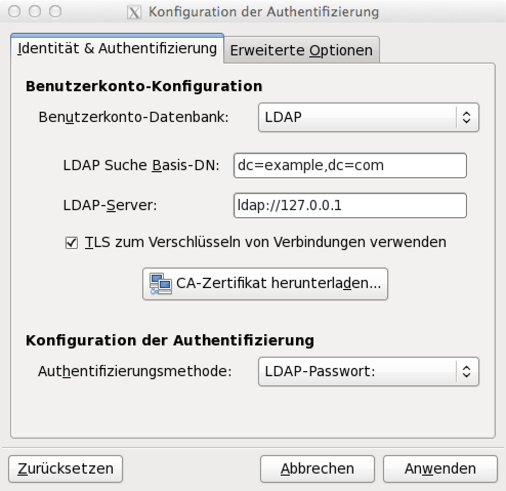
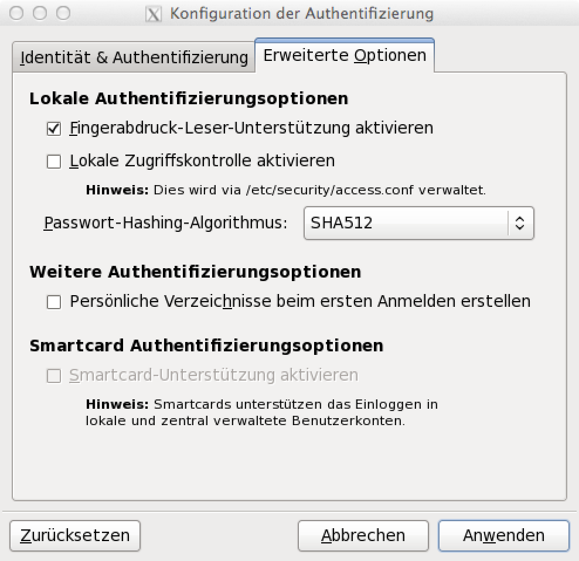
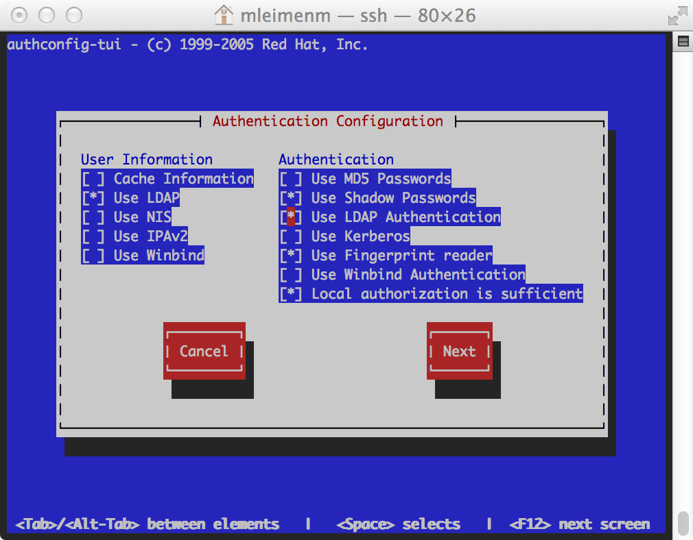
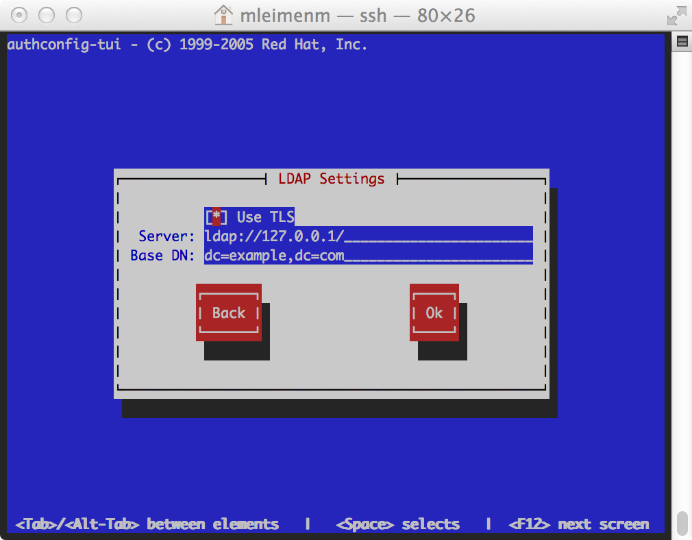
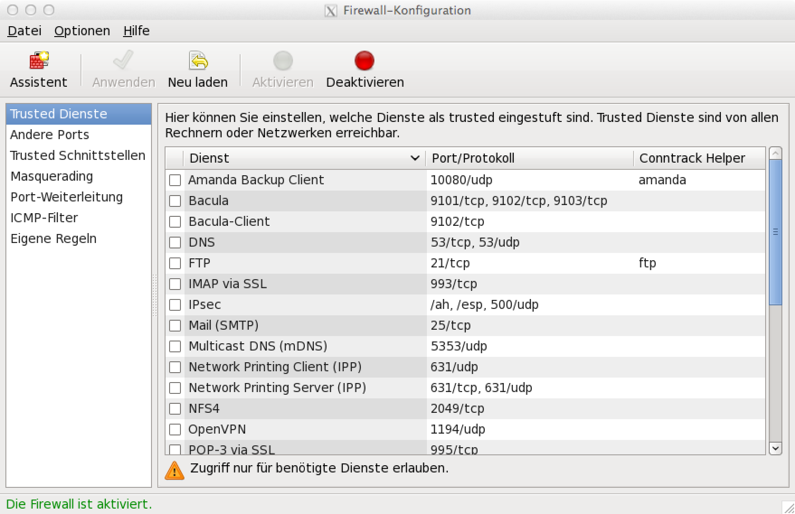
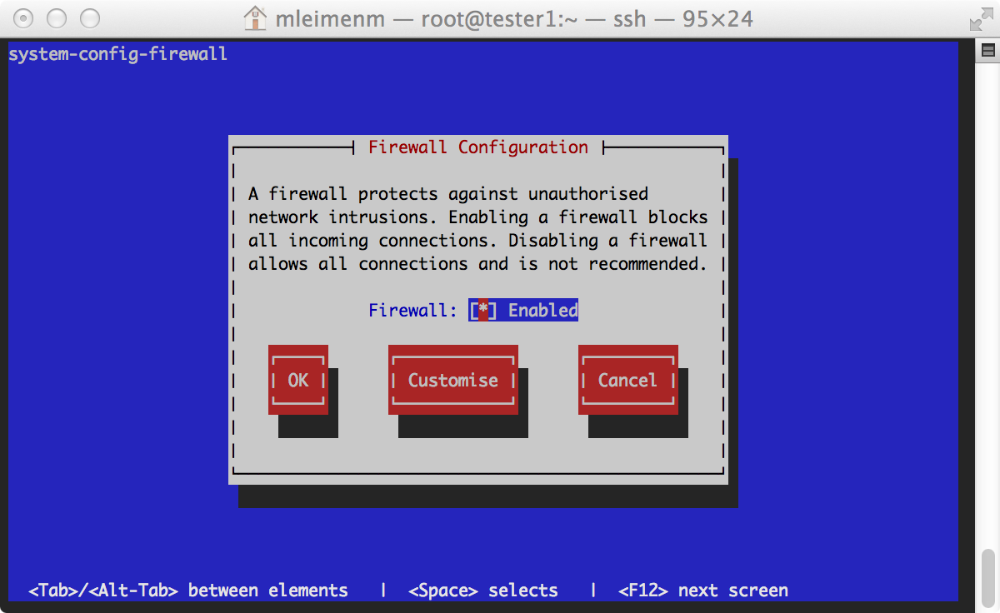

RHCSA Exam objectives
RHCSA exam candidates should be able to accomplish the tasks below without assistance. These have been grouped into several categories.
Understand and use essential tools
Note: Red Hat may use applications during the exam that are not included in Red Hat Enterprise Linux for the purpose of evaluating candidate's abilities to meet this objective.
Access a shell prompt and issue commands with correct syntax.
Use input-output redirection (>, >>, |, 2>, etc.).
| Operator | Beschreibung |
|---|---|
| > | stdout (Ausgabekanal) in Datei umlenken |
| 2> | stderr (Fehlerausgabekanal) in Datei umlenken |
| &> | Beide Ausgabekanäle in Datei umlenken |
| 2>&1 | Beide Ausgabekanäle in Pipe umlenken |
| >> | Umlenken in Datei um den Inahlt dort anzuhängen |
Use grep and regular expressions to analyze text.
Access remote systems using ssh and VNC.
SSH
VNC
Um einen VNC Server einzurichten muss man die /etc/sysconfig/vncservers bearbeiten und dort den bis zu 9 verschiedenen displays Usern zuteilen. Zur Kommunikation muss der Port 5900 und der passende Port für das Display (entsprechend bis 5909) geöffnet und für jeden User ein vnc Passwort gesetzt werden.
Pakete installieren
root@firefly:~> yum install tigervnc tigervnc-server
/etc/sysconfig/vncservers anpassen
# The VNCSERVERS variable is a list of display:user pairs.
#
# Uncomment the lines below to start a VNC server on display :2
# as my 'myusername' (adjust this to your own). You will also
# need to set a VNC password; run 'man vncpasswd' to see how
# to do that.
#
# DO NOT RUN THIS SERVICE if your local area network is
# untrusted! For a secure way of using VNC, see this URL:
# http://kbase.redhat.com/faq/docs/DOC-7028
# Use "-nolisten tcp" to prevent X connections to your VNC server via TCP.
# Use "-localhost" to prevent remote VNC clients connecting except when
# doing so through a secure tunnel. See the "-via" option in the
# `man vncviewer' manual page.
# VNCSERVERS="2:myusername"
# VNCSERVERARGS[2]="-geometry 800x600 -nolisten tcp -localhost"
VNCSERVERS="1:mleimenm"
VNCSERVERARGS[1]="-geometry 1920x1200"
Service starten
root@firefly:~> chkconfig --list | grep vnc
vncserver 0:Aus 1:Aus 2:Aus 3:Aus 4:Aus 5:Aus 6:Aus
root@firefly:~> chkconfig vncserver on
root@firefly:~> service vncserver start
VNC-Server starten: 1:mleimenm
New 'firefly.thyatis.mystara:1 (mleimenm)' desktop is firefly.thyatis.mystara:1
Starting applications specified in /home/mleimenm/.vnc/xstartup
Log file is /home/mleimenm/.vnc/firefly.thyatis.mystara:1.log
[ OK ]
vnc Passwort setzen
mleimenm@firefly:~> vncpasswd
Firewall für :1 bzw. port 5901 öffnen
root@firefly:~> iptables -A INPUT -m state --state NEW -m tcp -p tcp --dport 5901 -j ACCEPT
vnc Verbindung herstellen
mleimenm@serenity:~> vncviewer firefly:1
TigerVNC Viewer 64-bit v1.3.0 (20130924)
Built on Sep 24 2013 at 16:32:56
Copyright (C) 1999-2011 TigerVNC Team and many others (see README.txt)
See http://www.tigervnc.org for information on TigerVNC.
Sun Nov 17 22:01:32 2013
CConn: connected to host firefly port 5901
CConnection: Server supports RFB protocol version 3.8
CConnection: Using RFB protocol version 3.8
Log in and switch users in multiuser runlevels.
root@serenity:~> su - [user]
root@serenity:~> sg - <gruppe>
Archive, compress, unpack, and uncompress files using tar, star, gzip, and bzip2.
Installation
root@serenity:~> yum install tar star bzip2 gzip xz
tar
Das Standard Archivierungswerkzeug ist leider nicht in der Lage den SELinux Dateikontext zu sichern.
Tar-Archiv von allen .bash*-Dateien erstellen
root@serenity:~> tar cvf /tmp/archiv.tar .bash*
tar cvzf /tmp/archiv.tar.gz .bash*
tar cvjf /tmp/archiv.tar.bz2 .bash*
tar cvJf /tmp/archiv.tar.xz .bash*
.bash_aliases
.bash_history
.bash_logout
.bash_profile
.bashrc
Inhalt eines Tar-Archivs ausgeben
root@serenity:~> tar tvf /tmp/archiv.tar
tar tvzf /tmp/archiv.tar.gz
tar tvjf /tmp/archiv.tar.bz2
tar tvJf /tmp/archiv.tar.xz
-rw-r--r-- root/root 1883 2013-11-17 09:52 .bash_aliases
-rw------- root/root 22970 2013-11-18 08:30 .bash_history
-rw-r--r-- root/root 18 2009-05-20 12:45 .bash_logout
-rw-r--r-- root/root 962 2013-11-17 09:52 .bash_profile
-rw-r--r-- root/root 596 2013-11-17 09:52 .bashrc
Tar-Archiv entpacken
root@serenity:~> tar xvf /tmp/archiv.tar
tar xvzf /tmp/archiv.tar.gz
tar xvjf /tmp/archiv.tar.bz2
tar xvJf /tmp/archiv.tar.xz
.bash_aliases
.bash_history
.bash_logout
.bash_profile
.bashrc
star
star ist ein sehr schneller "tape archiver", der neben vielen erweitern Funktionen auch in der Lage ist SELinux Dateikontexte zu sichern.
Star-Archiv von allen .bash* Dateien erstellen (inkl. SELinux Kontext)
root@serenity:~> star -xattr -H=exustar -c -f=/tmp/bash_profile.star .bash*
star: 4 blocks + 0 bytes (total of 40960 bytes = 40.00k).
Star-Archiv entpacken
root@serenity:~> star -x -f=/tmp/bash_profile.star
star: 4 blocks + 0 bytes (total of 40960 bytes = 40.00k).
bzip2
bzip2 Dateien (ent-)packen
root@serenity:tmp> bzip2 archiv.tar
root@serenity:tmp> bunzip2 archiv.tar.bz2
gzip
gzip Dateien (ent-)packen
root@serenity:tmp> gzip archiv.tar
root@serenity:tmp> gunzip archiv.tar.gz
Create and edit text files.
Create, delete, copy, and move files and directories.
Create hard and soft links.
List, set, and change standard ugo/rwx permissions.
ugo/rwx sind die Standard Unix Dateirechte read (r), write (w) und execute (x) jeweils für den Eigentümer, die Eigentümergruppe und alle anderen Nutzer plus die Möglichkeit ein sogenanntes setuid-, setgid- oder sticky-bit zu setzen. Insgesamt haben wir also 12 bits pro Datei, die auch in Zahlen von 0 bis 7 entsprechend er Position des jeweiligen Bits dargestellt werden können. Eine Dateimaske von -rwxr-sr-- wäre also binärer Schreibweise 010 111 101 100 oder kurzerhand 2754 in oktaler Darstellung, welche auch von den nachfolgenden Kommandos präferiert wird.
ugo/rwx
Dateirechte anzeigen lassen
root@firefly:~> ls -l /tmp/gurke
-rw-r--r--. 1 root root 0 18. Nov 14:59 /tmp/gurke
root@firefly:~> stat /tmp/gurke
File: „/tmp/gurke“
Size: 0 Blocks: 0 IO Block: 4096 reguläre leere Datei
Device: fd03h/64771d Inode: 32 Links: 1
Access: (0644/-rw-r--r--) Uid: ( 0/ root) Gid: ( 0/ root)
Access: 2013-11-18 14:59:45.314212465 +0100
Modify: 2013-11-18 14:59:45.314212465 +0100
Change: 2013-11-18 14:59:45.314212465 +0100
Eigentümer der Datei ändern
root@firefly:~> chown [-R] user[:group] <file>
root@firefly:~> chgrp [-R] group <file>
Dateirechte ändern
root@firefly:~> chmod [-R] [ugo]±[rwx] <file>
root@firefly:~> chmod [-R] 2754 <file>
umask
Die umask ist eine normalerweise in den startup Skripten der shell verwendete Vorgabemaske für die Erstellung neuer Dateien.
Es handelt sich dabei um eine bitinvertierte Maske, bei der allerdings das executable bit, sowie die Vorgaben für setuid, setgid und sticky bit ignoriert werden.
Sprich eine umask von 0454 (oder 000 100 101 100) würde rein rechnireisch zu einer Datei mit den Rechten 0323 (oder 000 011 010 011), wird aber stattdessen zu
0222 (oder 000 010 010 010).
Beispiele:
root@server1:~> umask 022; touch testfile; ls -l testfile; rm -f testfile
-rw-r--r--. 1 root root 0 Nov 19 16:31 testfile
root@server1:~> umask 0454; touch testfile; ls -l testfile; rm -f testfile
--w--w--w-. 1 root root 0 Nov 19 16:31 testfile
root@server1:~> umask 0545; touch testfile; ls -l testfile; rm -f testfile
--w--w--w-. 1 root root 0 Nov 19 16:31 testfile
root@server1:~> umask 0000; touch testfile; ls -l testfile; rm -f testfile
-rw-rw-rw-. 1 root root 0 Nov 19 16:32 testfile
root@server1:~> umask 7000; touch testfile; ls -l testfile; rm -f testfile
-bash: umask: 7000: octal number out of range
-rw-rw-rw-. 1 root root 0 Nov 19 16:32 testfile
xattr
Erweiterte Dateiattribute (xattr) anzeigen und ändern
root@firefly:~> lsattr <file>
root@firefly:~> chattr ±[AacdEehIijSsTtuXZ] <file>
| xattr | Beschreibung |
|---|---|
| a | append only: An diese Datei dürfen Informationen nur angefügt, aber nicht überschrieben werden. |
| d | no dump: Diese Datei darf nicht via dump gesichert werden. |
| e | extents (ro): Filesystem (z.B. ext4) wird in extents verwaltet. |
| i | immuteable: Datei darf nicht verändert oder gelöscht werden. |
| I | indexed (ro): Verzeichnis ist mit Hash-Bäumen indiziert. |
Locate, read, and use system documentation including man, info, and files in /usr/share/doc.
- /usr/share/doc/<Package> Verzeichnis
- Kommandoschalter (-h, --help, --usage etc.)
- Info Pages
info <Kommando> - Manpages
man [-s sektion] <Kommando> man -k <Stichwort> - Servicedokumentation
elinks /var/www/manual - Whatis Datenbank
Manuell aktualisieren:
Titel durchsuchen:makewhatis
Beschreibung durchsuchen:whatis <Stichwort>apropos <Stichwort>
Operate running systems
Boot, reboot, and shut down a system normally.
root@server1:~> reboot
Broadcast message from root@server1.example.org
(/dev/pts/0) at 17:29 ...
The system is going down for reboot NOW!
root@server1:~> poweroff
Broadcast message from root@server1.example.org
(/dev/ttyS0) at 17:32 ...
The system is going down for power off NOW!
Boot systems into different runlevels manually.
Abwarten bis beim booten das grub Menü erscheint und editieren des zu bootenden Eintrages. Dazu muss evtl. erst ein Grub Kennwort eingegeben werden, bevor man durch das hinten anfügen eines runlevels oder eines init Programms an die kernel Zeile das System in den angegebenen Zustand bootet.
Mögliche Parameter sind:
- 1-5
bootet in den angegebenen Runlevel - single
bootet in den runlevel 1, allerdings ohne die init Skripte in /etc/rc1.d auszuführen - init=/bin/sh
führt keinerlei init Skripte aus, sondern mountet lediglich das root FS und startet eine root shell
Use single-user mode to gain access to a system.
Fährt man das System via grub in den Single-User Mode, so erfordert dieser kein Passwort um direkten root-Zugang zu bekommen. Aus diesem Grund ist es enorm wichtig ein Passwort für das grub-Menü zu setzen, damit nicht jeder unbefugt in den single user mode booten darf.
Identify CPU/memory intensive processes, adjust process priority with renice, and kill processes.
- ps
- top
- sar
- iostat
- nice bzw. renice
- kill bzw. killall
Locate and interpret system log files.
rsyslogd
/etc/rsyslog.conf und /etc/rsyslog.d
logrotate
/etc/logrotate.conf und /etc/logrotate.d
Access a virtual machine's console.
root@serenity:~> virsh list --all
Id Name State
----------------------------------------------------
5 tester1.example.com running
9 server1.example.com running
10 outsider1.example.org running
root@serenity:~> virsh console tester1.example.com
Connected to domain tester1.example.com
Escape character is ^]
CentOS release 6.4 (Final)
Kernel 2.6.32-358.el6.x86_64 on an x86_64
tester1.example.com login:
Start and stop virtual machines.
start
root@serenity:~> virsh start tester1.example.com
Domain tester1.example.com started
reboot
root@serenity:~> virsh reboot tester1.example.com
Domain tester1.example.com is being rebooted
shutdown
root@serenity:~> virsh shutdown tester1.example.com
Domain tester1.example.com is being shutdown
"hardware" poweroff
root@serenity:~> virsh destroy tester1.example.com
Domain tester1.example.com destroyed
Start, stop, and check the status of network services.
network Service
[root@server1 ~]# service network status
Configured devices:
lo eth0
Currently active devices:
lo eth0
[root@server1 ~]# service network stop
Shutting down interface eth0: [ OK ]
Shutting down loopback interface: [ OK ]
[root@server1 ~]# service network start
Bringing up loopback interface: lo: Disabled Privacy Extensions
[ OK ]
Bringing up interface eth0: [ OK ]
[root@server1 ~]# service network restart
Shutting down interface eth0: [ OK ]
Shutting down loopback interface: [ OK ]
Bringing up loopback interface: lo: Disabled Privacy Extensions
[ OK ]
Bringing up interface eth0: [ OK ]
Kommandos
Interface gemäß Konfigurationsdateien (de-)aktivieren
root@firefly:~> ifup eth0
root@firefly:~> ifdown eth0
Hardware Konfiguration des Interfaces
root@firefly:~> ethtool eth0
Settings for eth0:
Supported ports: [ TP MII ]
Supported link modes: 10baseT/Half 10baseT/Full
100baseT/Half 100baseT/Full
1000baseT/Half 1000baseT/Full
Supported pause frame use: No
Supports auto-negotiation: Yes
Advertised link modes: 10baseT/Half 10baseT/Full
100baseT/Half 100baseT/Full
1000baseT/Half 1000baseT/Full
Advertised pause frame use: Symmetric Receive-only
Advertised auto-negotiation: Yes
Link partner advertised link modes: 10baseT/Half 10baseT/Full
100baseT/Half 100baseT/Full
1000baseT/Full
Link partner advertised pause frame use: Symmetric
Link partner advertised auto-negotiation: Yes
Speed: 1000Mb/s
Duplex: Full
Port: MII
PHYAD: 0
Transceiver: internal
Auto-negotiation: on
Supports Wake-on: pumbg
Wake-on: g
Current message level: 0x00000033 (51)
drv probe ifdown ifup
Link detected: yes
Link Konfiguration anzeigen
root@firefly:~> ip link show
1: lo: <LOOPBACK,UP,LOWER_UP> mtu 16436 qdisc noqueue state UNKNOWN
link/loopback 00:00:00:00:00:00 brd 00:00:00:00:00:00
2: eth0: <BROADCAST,MULTICAST,UP,LOWER_UP> mtu 1500 qdisc pfifo_fast state UP qlen 1000
link/ether 50:46:5d:76:70:ac brd ff:ff:ff:ff:ff:ff
IP Adresskonfiguration anzeigen
root@firefly:~> ip addr show
1: lo: <LOOPBACK,UP,LOWER_UP> mtu 16436 qdisc noqueue state UNKNOWN
link/loopback 00:00:00:00:00:00 brd 00:00:00:00:00:00
inet 127.0.0.1/8 scope host lo
inet6 ::1/128 scope host
valid_lft forever preferred_lft forever
2: eth0: <BROADCAST,MULTICAST,UP,LOWER_UP> mtu 1500 qdisc pfifo_fast state UP qlen 1000
link/ether 50:46:5d:76:70:ac brd ff:ff:ff:ff:ff:ff
inet 192.168.197.158/27 brd 192.168.197.159 scope global eth0
inet6 fe80::5246:5dff:fe76:70ac/64 scope link
valid_lft forever preferred_lft forever
Routingtabelle anzeigen
root@firefly:~> ip route show
192.168.197.128/27 dev eth0 proto kernel scope link src 192.168.197.158
169.254.0.0/16 dev eth0 scope link metric 1002
default via 192.168.197.129 dev eth0
ARP Cache bzw. Nachbarn anzeigen
root@firefly:~> ip neighbour show
192.168.197.136 dev eth0 lladdr 00:21:80:64:df:ad STALE
192.168.197.145 dev eth0 lladdr f0:cb:a1:01:68:e3 STALE
192.168.197.129 dev eth0 lladdr 00:24:fe:58:f7:6f STALE
192.168.197.156 dev eth0 lladdr 00:25:4b:ac:86:8a REACHABLE
192.168.197.155 dev eth0 lladdr 10:dd:b1:cb:23:d1 REACHABLE
192.168.197.142 dev eth0 lladdr 00:80:3f:36:0d:a2 STALE
Interface Statistiken anzeigen
root@firefly:~> ip -s -s link
1: lo: <LOOPBACK,UP,LOWER_UP> mtu 16436 qdisc noqueue state UNKNOWN
link/loopback 00:00:00:00:00:00 brd 00:00:00:00:00:00
RX: bytes packets errors dropped overrun mcast
4981632 4062 0 0 0 0
RX errors: length crc frame fifo missed
0 0 0 0 0
TX: bytes packets errors dropped carrier collsns
4981632 4062 0 0 0 0
TX errors: aborted fifo window heartbeat
0 0 0 0
2: eth0: <BROADCAST,MULTICAST,UP,LOWER_UP> mtu 1500 qdisc pfifo_fast state UP qlen 1000
link/ether 50:46:5d:76:70:ac brd ff:ff:ff:ff:ff:ff
RX: bytes packets errors dropped overrun mcast
6837153 51069 0 0 0 0
RX errors: length crc frame fifo missed
0 0 0 0 0
TX: bytes packets errors dropped carrier collsns
8033255 24180 0 0 0 0
TX errors: aborted fifo window heartbeat
0 0 0 0
Interface (de-)aktivieren
root@firefly:~> ip link set eth0 up
root@firefly:~> ip link set eth0 down
Interface manuell konfigurieren
root@firefly:~> ip addr add 192.168.50.5 dev eth0
root@firefly:~> ip addr del 192.168.50.5/24 dev eth0
Routen manuell setzen bzw. löschen
root@firefly:~> ip route add default via 192.168.197.129 dev eth0
root@firefly:~> ip route add 85.214.68.104/32 via 192.168.197.155 dev eth0
root@firefly:~> ip route del 85.214.68.104/32 via 192.168.197.155 dev eth0
Das ip Kommando im Detail
Das ip Kommando kann nicht nur Netzwerkinformationen anzeigen, sondern ist vielmehr das Schweizer Messer des TCP/IP-Stacks, vereinheitlich die Konfiguration von ipv4 und ipv6 und löst bestehende Tools wie ifconfig, ethtool, netstat, route, arp vollständig ab. Die Allgemeine Syntax ist:
ip [ OPTIONS ] OBJECT { COMMAND | help }
wobei wir die Punkte OBJECT und COMMAND in den beiden folgenden Tabellen näher betrachten möchten.
| OBJECT | COMMAND | Beschreibung |
|---|---|---|
| link |
show set |
Interface Information auf Link-Level |
| addr |
show add del flush |
Protokolladresse auf dem Interface (IPv4 & IPv6) |
| addrlabel |
list add del flush |
Label für Protokoll Adress Selektion |
| route |
show add del change append replace get monitor flush |
Eintrag in der Routingtabelle |
| rule |
show add del flush |
Regel in der Routing Policy Datenbank |
| neigh |
show add del change replace flush |
ARP (IPv4) bzw. NDISC (IPv6) Cache Eintrag |
| tunnel |
show add change del prl |
Tunnel over IP |
| maddr |
show add delete |
Multicast Adresse |
| mroute | show | Multicast Routing Cache Eintrag |
| xfrm | IPSec Framework | |
| monitor | all | Kommando kehrt nicht zurück, sondern hakt sich an ein oder mehrere Interfaces und meldet kontinuierlich Veränderungen an selbigen. |
Aktive Verbindungen
Aktive Clientverbindungen
root@server1:~> netstat -puten
Active Internet connections (w/o servers)
Proto Recv-Q Send-Q Local Address Foreign Address State User Inode PID/Program name
tcp 0 0 192.168.122.51:22 192.168.122.1:47855 ESTABLISHED 0 77511 15956/sshd
Aktive Serververbindungen
root@server1:~> netstat -tulpen
Active Internet connections (only servers)
Proto Recv-Q Send-Q Local Address Foreign Address State User Inode PID/Program name
tcp 0 0 0.0.0.0:875 0.0.0.0:* LISTEN 0 13459 1642/rpc.rquotad
tcp 0 0 0.0.0.0:5901 0.0.0.0:* LISTEN 0 14696 1865/Xvnc
tcp 0 0 0.0.0.0:111 0.0.0.0:* LISTEN 0 12232 1398/rpcbind
tcp 0 0 0.0.0.0:22 0.0.0.0:* LISTEN 0 13755 1720/sshd
tcp 0 0 127.0.0.1:631 0.0.0.0:* LISTEN 0 12823 1507/cupsd
tcp 0 0 127.0.0.1:25 0.0.0.0:* LISTEN 0 13945 1796/master
tcp 0 0 0.0.0.0:53305 0.0.0.0:* LISTEN 29 12496 1424/rpc.statd
tcp 0 0 0.0.0.0:892 0.0.0.0:* LISTEN 0 13488 1646/rpc.mountd
tcp 0 0 0.0.0.0:2049 0.0.0.0:* LISTEN 0 13702 -
tcp 0 0 0.0.0.0:32803 0.0.0.0:* LISTEN 0 13717 -
tcp 0 0 :::111 :::* LISTEN 0 12237 1398/rpcbind
tcp 0 0 :::80 :::* LISTEN 0 20045 2588/httpd
tcp 0 0 :::22 :::* LISTEN 0 13759 1720/sshd
tcp 0 0 :::23 :::* LISTEN 0 21560 2819/xinetd
tcp 0 0 ::1:631 :::* LISTEN 0 12822 1507/cupsd
tcp 0 0 :::59832 :::* LISTEN 29 12504 1424/rpc.statd
tcp 0 0 ::1:25 :::* LISTEN 0 13947 1796/master
tcp 0 0 :::443 :::* LISTEN 0 20049 2588/httpd
tcp 0 0 :::892 :::* LISTEN 0 13496 1646/rpc.mountd
tcp 0 0 :::2049 :::* LISTEN 0 13707 -
tcp 0 0 :::32803 :::* LISTEN 0 13719 -
udp 0 0 0.0.0.0:875 0.0.0.0:* 0 13452 1642/rpc.rquotad
udp 0 0 0.0.0.0:111 0.0.0.0:* 0 12227 1398/rpcbind
udp 0 0 0.0.0.0:752 0.0.0.0:* 0 12486 1424/rpc.statd
udp 0 0 0.0.0.0:631 0.0.0.0:* 0 12826 1507/cupsd
udp 0 0 0.0.0.0:892 0.0.0.0:* 0 13484 1646/rpc.mountd
udp 0 0 0.0.0.0:32769 0.0.0.0:* 0 13716 -
udp 0 0 0.0.0.0:2049 0.0.0.0:* 0 13705 -
udp 0 0 0.0.0.0:53381 0.0.0.0:* 29 12492 1424/rpc.statd
udp 0 0 0.0.0.0:725 0.0.0.0:* 0 12231 1398/rpcbind
udp 0 0 :::111 :::* 0 12234 1398/rpcbind
udp 0 0 :::892 :::* 0 13492 1646/rpc.mountd
udp 0 0 :::32769 :::* 0 13718 -
udp 0 0 :::2049 :::* 0 13708 -
udp 0 0 :::42186 :::* 29 12500 1424/rpc.statd
udp 0 0 :::725 :::* 0 12236 1398/rpcbind
Configure local storage
List, create, delete, and set partition type for primary, extended, and logical partitions.
GNU parted
parted Kommandos
align-check TYPE N check partition N for TYPE(min|opt) alignment
check NUMBER do a simple check on the file system
cp [FROM-DEVICE] FROM-NUMBER TO-NUMBER copy file system to another partition
help [COMMAND] print general help, or help on COMMAND
mklabel,mktable LABEL-TYPE create a new disklabel (partition table)
mkfs NUMBER FS-TYPE make a FS-TYPE file system on partition NUMBER
mkpart PART-TYPE [FS-TYPE] START END make a partition
mkpartfs PART-TYPE FS-TYPE START END make a partition with a file system
move NUMBER START END move partition NUMBER
name NUMBER NAME name partition NUMBER as NAME
print [devices|free|list,all|NUMBER] display the partition table, available devices, free space, all found partitions, or a particular partition
quit exit program
rescue START END rescue a lost partition near START and END
resize NUMBER START END resize partition NUMBER and its file system
rm NUMBER delete partition NUMBER
select DEVICE choose the device to edit
set NUMBER FLAG STATE change the FLAG on partition NUMBER
toggle [NUMBER [FLAG]] toggle the state of FLAG on partition NUMBER
unit UNIT set the default unit to UNIT
version display the version number and copyright information of GNU Parted
Partitionen anzeigen
[root@tester1 ~]# parted -l
Model: ATA QEMU HARDDISK (scsi)
Disk /dev/sda: 16.1GB
Sector size (logical/physical): 512B/512B
Partition Table: msdos
Number Start End Size Type File system Flags
1 1049kB 538MB 537MB primary ext2 boot
2 538MB 16.1GB 15.6GB primary lvm
Model: Linux device-mapper (linear) (dm)
Disk /dev/mapper/vg0-rootvol: 10.7GB
Sector size (logical/physical): 512B/512B
Partition Table: loop
Number Start End Size File system Flags
1 0.00B 10.7GB 10.7GB ext4
Model: Linux device-mapper (linear) (dm)
Disk /dev/mapper/vg0-swapvol: 2147MB
Sector size (logical/physical): 512B/512B
Partition Table: loop
Number Start End Size File system Flags
1 0.00B 2147MB 2147MB linux-swap(v1)
Model: Virtio Block Device (virtblk)
Disk /dev/vda: 5120MB
Sector size (logical/physical): 512B/512B
Partition Table: gpt
Number Start End Size File system Name Flags
1 1049kB 5119MB 5118MB primary lvm
parted im interaktiven shell-Modus aufrufen
[root@tester1 ~]# parted /dev/vda
GNU Parted 2.1
Using /dev/vda
Welcome to GNU Parted! Type 'help' to view a list of commands.
(parted)
Label erstellen
(parted) mklabel gpt
Partition erstellen
(parted) mkpart primary 1 -1
Partitionstyp auf LVM setzen
(parted) set 1 lvm on
Partitionstabelle anzeigen
(parted) p
Model: Virtio Block Device (virtblk)
Disk /dev/vda: 5120MB
Sector size (logical/physical): 512B/512B
Partition Table: gpt
Number Start End Size File system Name Flags
1 1049kB 5119MB 5118MB primary lvm
Partitionsinformationen aktualisieren
[root@tester1 ~]# partprobe /dev/vda
Create and remove physical volumes, assign physical volumes to volume groups, and create and delete logical Volumes.
LVM
Das Logical Volume Management hat sein Konfigurationsverzeichnis unter /etc/lvm und kann mit der interaktiven lvm shell administriert werden.
Entsprechend sinnvoll ist es dort die Online Hilfe zu Rate zu ziehen.
root@firefly:~> lvm
lvm> help
Available lvm commands:
Use 'lvm help <command>' for more information
dumpconfig Dump active configuration
formats List available metadata formats
help Display help for commands
lvchange Change the attributes of logical volume(s)
lvconvert Change logical volume layout
lvcreate Create a logical volume
lvdisplay Display information about a logical volume
lvextend Add space to a logical volume
lvmchange With the device mapper, this is obsolete and does nothing.
lvmdiskscan List devices that may be used as physical volumes
lvmsadc Collect activity data
lvmsar Create activity report
lvreduce Reduce the size of a logical volume
lvremove Remove logical volume(s) from the system
lvrename Rename a logical volume
lvresize Resize a logical volume
lvs Display information about logical volumes
lvscan List all logical volumes in all volume groups
pvchange Change attributes of physical volume(s)
pvresize Resize physical volume(s)
pvck Check the consistency of physical volume(s)
pvcreate Initialize physical volume(s) for use by LVM
pvdata Display the on-disk metadata for physical volume(s)
pvdisplay Display various attributes of physical volume(s)
pvmove Move extents from one physical volume to another
pvremove Remove LVM label(s) from physical volume(s)
pvs Display information about physical volumes
pvscan List all physical volumes
segtypes List available segment types
vgcfgbackup Backup volume group configuration(s)
vgcfgrestore Restore volume group configuration
vgchange Change volume group attributes
vgck Check the consistency of volume group(s)
vgconvert Change volume group metadata format
vgcreate Create a volume group
vgdisplay Display volume group information
vgexport Unregister volume group(s) from the system
vgextend Add physical volumes to a volume group
vgimport Register exported volume group with system
vgmerge Merge volume groups
vgmknodes Create the special files for volume group devices in /dev
vgreduce Remove physical volume(s) from a volume group
vgremove Remove volume group(s)
vgrename Rename a volume group
vgs Display information about volume groups
vgscan Search for all volume groups
vgsplit Move physical volumes into a new or existing volume group
version Display software and driver version information
lvm>
Physical Volumes
Liste der Physical Volumes anzeigen
root@server1:~> pvs
PV VG Fmt Attr PSize PFree
/dev/sda2 vg0 lvm2 a-- 14.47g 2.47g
/dev/vda1 testvg lvm2 a-- 5.00g 3.00g
/dev/vdb1 testvg lvm2 a-- 5.00g 5.00g
Physical Volume erstellen / zerstören
root@server1:~> pvcreate /dev/vda1
Physical volume "/dev/vda1" successfully created
root@server1:~> pvremove /dev/vdb1
Labels on physical volume "/dev/vdb1" successfully wiped
ausführliche Informationen (inkl. Mapping) anzeigen
root@server1:~> pvdisplay --map
--- Physical volume ---
PV Name /dev/sda2
VG Name vg0
PV Size 14.50 GiB / not usable 31.00 MiB
Allocatable yes
PE Size 32.00 MiB
Total PE 463
Free PE 79
Allocated PE 384
PV UUID PFfFAs-oPnD-uv3Y-Hgf1-UWPs-2WLX-oN6PKk
--- Physical Segments ---
Physical extent 0 to 63:
Logical volume/dev/vg0/swapvol
Logical extents0 to 63
Physical extent 64 to 383:
Logical volume/dev/vg0/rootvol
Logical extents0 to 319
Physical extent 384 to 462:
FREE
--- Physical volume ---
PV Name /dev/vda1
VG Name testvg
PV Size 5.00 GiB / not usable 2.00 MiB
Allocatable yes
PE Size 4.00 MiB
Total PE 1279
Free PE 767
Allocated PE 512
PV UUID OWSHeJ-dDww-xb30-GfZ0-Eqey-uOoq-GpTFxH
--- Physical Segments ---
Physical extent 0 to 511:
Logical volume/dev/testvg/testvol
Logical extents0 to 511
Physical extent 512 to 1278:
FREE
--- Physical volume ---
PV Name /dev/vdb1
VG Name testvg
PV Size 5.00 GiB / not usable 2.00 MiB
Allocatable yes
PE Size 4.00 MiB
Total PE 1279
Free PE 1279
Allocated PE 0
PV UUID rWIsiY-9EjR-MQvd-KXjr-QjvJ-Vnw3-TIwBYF
--- Physical Segments ---
Physical extent 0 to 1278:
FREE
Volume Groups
Liste der Volume Groups anzeigen
root@server1:~> vgs
VG #PV #LV #SN Attr VSize VFree
testvg 2 1 0 wz--n- 9.99g 7.99g
vg0 1 2 0 wz--n- 14.47g 2.47g
Volume Group erstellen / zerstören
root@server1:~> vgcreate testvg /dev/vda1
Volume group "testvg" successfully created
root@server1:~> vgremove testvg
Volume group "testvg" successfully removed
ausführliche Informationen anzeigen
root@server1:~> vgdisplay
--- Volume group ---
VG Name vg0
System ID
Format lvm2
Metadata Areas 1
Metadata Sequence No 3
VG Access read/write
VG Status resizable
MAX LV 0
Cur LV 2
Open LV 2
Max PV 0
Cur PV 1
Act PV 1
VG Size 14.47 GiB
PE Size 32.00 MiB
Total PE 463
Alloc PE / Size 384 / 12.00 GiB
Free PE / Size 79 / 2.47 GiB
VG UUID U2GwcH-eZEw-y4To-fJQd-20Em-neUy-y1vrJ8
--- Volume group ---
VG Name testvg
System ID
Format lvm2
Metadata Areas 2
Metadata Sequence No 3
VG Access read/write
VG Status resizable
MAX LV 0
Cur LV 1
Open LV 0
Max PV 0
Cur PV 2
Act PV 2
VG Size 9.99 GiB
PE Size 4.00 MiB
Total PE 2558
Alloc PE / Size 512 / 2.00 GiB
Free PE / Size 2046 / 7.99 GiB
VG UUID WiZxKT-Am6R-kISs-0irV-rywB-0rMV-H1HJU8
Volume Group um ein Physical Volume erweitern / reduzieren
root@server1:~> vgextend testvg /dev/vdb1
Volume group "testvg" successfully extended
root@server1:~> vgreduce testvg /dev/vdb1
Removed "/dev/vdb1" from volume group "testvg"
Logical Volumes
Liste der Logical Volumes anzeigen
root@server1:~> lvs
LV VG Attr LSize Pool Origin Data% Move Log Cpy%Sync Convert
testvol testvg -wi-ao--- 2.00g
rootvol vg0 -wi-ao--- 10.00g
swapvol vg0 -wi-ao--- 2.00g
Logical Volumes erstellen / zerstören
root@server1:~> lvcreate -L 2g -n testvol testvg
Logical volume "testvol" created
ausführliche Informationen (inkl. Mapping) anzeigen
root@server1:~> lvremove /dev/testvg/testvol
Do you really want to remove active logical volume testvol? [y/n]: y
Logical volume "testvol" successfully removed
root@server1:~> lvdisplay --map
--- Logical volume ---
LV Path /dev/vg0/swapvol
LV Name swapvol
VG Name vg0
LV UUID O15FMG-supq-RUIT-eZ1z-v9Vh-mh89-aB4RVS
LV Write Access read/write
LV Creation host, time localhost.localdomain, 2013-04-27 06:18:38 +0200
LV Status available
# open 1
LV Size 2.00 GiB
Current LE 64
Segments 1
Allocation inherit
Read ahead sectors auto
- currently set to 256
Block device 253:0
--- Segments ---
Logical extent 0 to 63:
Typelinear
Physical volume/dev/sda2
Physical extents0 to 63
--- Logical volume ---
LV Path /dev/vg0/rootvol
LV Name rootvol
VG Name vg0
LV UUID GeHKfS-hRZl-3W3w-BgaV-s3Lw-1rzZ-dWrd6I
LV Write Access read/write
LV Creation host, time localhost.localdomain, 2013-04-27 06:18:38 +0200
LV Status available
# open 1
LV Size 10.00 GiB
Current LE 320
Segments 1
Allocation inherit
Read ahead sectors auto
- currently set to 256
Block device 253:1
--- Segments ---
Logical extent 0 to 319:
Typelinear
Physical volume/dev/sda2
Physical extents64 to 383
--- Logical volume ---
LV Path /dev/testvg/testvol
LV Name testvol
VG Name testvg
LV UUID MZ53l7-4PDB-YhGA-UBuD-g3y1-Kp7F-pDFhdS
LV Write Access read/write
LV Creation host, time server1.example.org, 2013-11-19 09:55:37 +0100
LV Status available
# open 0
LV Size 2.00 GiB
Current LE 512
Segments 1
Allocation inherit
Read ahead sectors auto
- currently set to 256
Block device 253:2
--- Segments ---
Logical extent 0 to 511:
Typelinear
Physical volume/dev/vda1
Physical extents0 to 511
Logical Volume vergrößern / verkleinern
root@server1:~> lvresize -L 3g /dev/testvg/testvol
Extending logical volume testvol to 3.00 GiB
Logical volume testvol successfully resized
root@server1:~> lvextend -L 4g /dev/testvg/testvol
Extending logical volume testvol to 4.00 GiB
Logical volume testvol successfully resized
root@server1:~> lvreduce -L 2g /dev/testvg/testvol
WARNING: Reducing active logical volume to 2.00 GiB
THIS MAY DESTROY YOUR DATA (filesystem etc.)
Do you really want to reduce testvol? [y/n]: y
Reducing logical volume testvol to 2.00 GiB
Logical volume testvol successfully resized
Create and configure LUKS-encrypted partitions and logical volumes to prompt for password and mount a decrypted file system at boot.
Datei oder Partition mit Zufallsdaten füllen
Man kann die Sicherheit der Verschlüsselung noch dadurch erhöhen, dass man das Ziel (Datei, Volume oder Partition) vorher mit Zufallsdaten füllt. Dieser Schritt ist optional und dauert eine Weile, daher ist er für die Prüfung nicht zu empfehlen.
root@server1:~> dd if=/dev/urandom of=/dev/testvg/cryptvol
dd: writing to `/dev/testvg/cryptvol': No space left on device
4194305+0 records in
4194304+0 records out
2147483648 bytes (2.1 GB) copied, 406.129 s, 5.3 MB/s
LUKS Dateisystem erstellen
root@server1:~> cryptsetup -v luksFormat /dev/testvg/cryptvol
WARNING!
========
This will overwrite data on /dev/testvg/cryptvol irrevocably.
Are you sure? (Type uppercase yes): YES
Enter LUKS passphrase:
Verify passphrase:
Command successful.
LUKS Dateisystem öffnen und mounten
root@server1:~> cryptsetup -v luksOpen /dev/testvg/cryptvol secretsvol
Enter passphrase for /dev/testvg/cryptvol:
Key slot 0 unlocked.
Command successful.
root@server1:~> mkfs -t ext4 -L secretsfs /dev/mapper/secretsvol
mke2fs 1.41.12 (17-May-2010)
Filesystem label=secretsfs
OS type: Linux
Block size=4096 (log=2)
Fragment size=4096 (log=2)
Stride=0 blocks, Stripe width=0 blocks
131072 inodes, 523776 blocks
26188 blocks (5.00%) reserved for the super user
First data block=0
Maximum filesystem blocks=536870912
16 block groups
32768 blocks per group, 32768 fragments per group
8192 inodes per group
Superblock backups stored on blocks:
32768, 98304, 163840, 229376, 294912
Writing inode tables: done
Creating journal (8192 blocks): done
Writing superblocks and filesystem accounting information: done
This filesystem will be automatically checked every 21 mounts or
180 days, whichever comes first. Use tune2fs -c or -i to override.
root@server1:~> mount /dev/mapper/secretsvol /secrets
LUKS Mapping in die /etc/crypttab eintragen
secretsvol /dev/testvg/cryptvol none luks
LUKS Dateisystem in die /etc/fstab eintragen
#
# /etc/fstab
# Created by anaconda on Sat Apr 27 06:18:48 2013
#
# Accessible filesystems, by reference, are maintained under '/dev/disk'
# See man pages fstab(5), findfs(8), mount(8) and/or blkid(8) for more info
#
/dev/mapper/vg0-rootvol / ext4 defaults 1 1
UUID=0f710315-4890-4e2b-ae3c-de9929d6b393 /boot ext2 defaults 1 2
/dev/mapper/vg0-swapvol swap swap defaults 0 0
tmpfs /dev/shm tmpfs defaults 0 0
devpts /dev/pts devpts gid=5,mode=620 0 0
sysfs /sys sysfs defaults 0 0
proc /proc proc defaults 0 0
/var/ftp /ftp none bind 0 0
/dev/mapper/secretsvol /secrets ext4 defaults 0 0
Das nächste Mal, wenn das System dann bootet wird man entsprechend nach der Passphrase gefragt, bevor das Dateisystem eingehängt und das System weiter gebootet wird.
...
Setting hostname server1.example.org: [ OK ]
Setting up Logical Volume Management: 2 logical volume(s) in volume group "vg0" now active
2 logical volume(s) in volume group "testvg" now active
[ OK ]
/secrets is password protected:*************************
Intel AES-NI instructions are not detected.
padlock: VIA PadLock not detected.
padlock: VIA PadLock Hash Engine not detected.
modprobe: FATAL: Error inserting padlock_sha (/lib/modules/2.6.32-358.23.2.el6.x86_64/kernel/drivers/crypto/padlock-sha.ko): No such device
Checking filesystems
Checking all file systems.
[/sbin/fsck.ext4 (1) -- /] fsck.ext4 -a /dev/mapper/vg0-rootvol
/dev/mapper/vg0-rootvol: clean, 99700/655360 files, 1135163/2621440 blocks
[/sbin/fsck.ext2 (1) -- /boot] fsck.ext2 -a /dev/sda1
/dev/sda1: clean, 45/32768 files, 13554/131072 blocks
[ OK ]
...
Configure systems to mount file systems at boot by Universally Unique ID (UUID) or label.
UUID des Filesystems herausfinden
root@server1:~> blkid | grep testfs
/dev/mapper/testvg-testvol: LABEL="testfs" UUID="85942a01-6317-47ce-9bdc-d4cf68e2c82a" TYPE="ext4"
Filesystem via UUID / LABEL in /etc/fstab eintragen
root@server1:~> printf "$(blkid | grep testfs | cut -d\ -f3)\t/testvol\text4\tdefaults\t0 0\n" >> /etc/fstab
root@server1:~> printf "$(blkid | grep testfs | cut -d\ -f2)\t/testvol\text4\tdefaults\t0 0\n" >> /etc/fstab
Einträge durch mounten prüfen
root@server1:~> mount -a
root@server1:~> df -h /testvol
Filesystem Size Used Avail Use% Mounted on
/dev/mapper/testvg-testvol
2.0G 67M 1.9G 4% /testvol
Add new partitions and logical volumes, and swap to a system non-destructively.
swap
Datei für swapfile erstellen
Möchte man statt einer Partition oder eines eigenen logischen Volumes lieber ein swapfile benutzen, so muss dies vorher erstellt werden.
root@server1:~> dd if=/dev/zero of=/swapfile bs=1M count=2048
2048+0 records in
2048+0 records out
2147483648 bytes (2.1 GB) copied, 11.9962 s, 179 MB/s
Swap erstellen
root@server1:~> mkswap -L swapfile0 /swapfile
mkswap: /swapfile: warning: don't erase bootbits sectors
on whole disk. Use -f to force.
Setting up swapspace version 1, size = 2097148 KiB
LABEL=swapfile0, UUID=66a4ba81-f1e5-4d0d-a1c1-51b150d84cb3
swap (de-)aktivieren
root@server1:~> swapon /swapfile
root@server1:~> swapoff /swapfile
swap anzeigen
root@server1:~> swapon -s
Filename Type Size Used Priority
/dev/dm-0 partition 2097144 0 -1
/swapfile file 2097144 0 -2
Create and configure file systems
Create, mount, unmount, and use ext2, ext3, and ext4 file systems.
Filesystem erstellen
root@server1:~> mkfs -t ext4 -L testfs /dev/testvg/testvol
mkfs -t ext3 -L testfs /dev/testvg/testvol
mkfs -t ext2 -L testfs /dev/testvg/testvol
mke2fs 1.41.12 (17-May-2010)
Filesystem label=testfs
OS type: Linux
Block size=4096 (log=2)
Fragment size=4096 (log=2)
Stride=0 blocks, Stripe width=0 blocks
131072 inodes, 524288 blocks
26214 blocks (5.00%) reserved for the super user
First data block=0
Maximum filesystem blocks=536870912
16 block groups
32768 blocks per group, 32768 fragments per group
8192 inodes per group
Superblock backups stored on blocks:
32768, 98304, 163840, 229376, 294912
Writing inode tables: done
Creating journal (16384 blocks): done
Writing superblocks and filesystem accounting information: done
This filesystem will be automatically checked every 29 mounts or
180 days, whichever comes first. Use tune2fs -c or -i to override.
Filesystem upgraden
Filesystem von ext2 auf ext3 upzugrade erfordert lediglich die Aktivierung des journaling. Ein Upgrade von ext3 auf ext4 erfordert die Aktivierung von mehreren Flags.
root@server1:~> mkfs -t ext2 -L upgradefs /dev/testvg/upgradevol
mke2fs 1.41.12 (17-May-2010)
Filesystem label=upgradefs
OS type: Linux
Block size=4096 (log=2)
Fragment size=4096 (log=2)
Stride=0 blocks, Stripe width=0 blocks
65536 inodes, 262144 blocks
13107 blocks (5.00%) reserved for the super user
First data block=0
Maximum filesystem blocks=268435456
8 block groups
32768 blocks per group, 32768 fragments per group
8192 inodes per group
Superblock backups stored on blocks:
32768, 98304, 163840, 229376
Writing inode tables: done
Writing superblocks and filesystem accounting information: done
This filesystem will be automatically checked every 34 mounts or
180 days, whichever comes first. Use tune2fs -c or -i to override.
root@server1:~> dumpe2fs /dev/testvg/upgradevol | grep "Filesystem features"
dumpe2fs 1.41.12 (17-May-2010)
Filesystem features: ext_attr resize_inode dir_index filetype sparse_super large_file
root@server1:~> tune2fs -j /dev/testvg/upgradevol
tune2fs 1.41.12 (17-May-2010)
Creating journal inode: done
This filesystem will be automatically checked every 34 mounts or
180 days, whichever comes first. Use tune2fs -c or -i to override.
root@server1:~> dumpe2fs /dev/testvg/upgradevol | grep "Filesystem features"
dumpe2fs 1.41.12 (17-May-2010)
Filesystem features: has_journal ext_attr resize_inode dir_index filetype sparse_super large_file
root@server1:~> tune2fs -O extent,uninit_bg,dir_index /dev/testvg/upgradevol
tune2fs 1.41.12 (17-May-2010)
Please run e2fsck on the filesystem.
root@server1:~> e2fsck -y /dev/testvg/upgradevol
e2fsck 1.41.12 (17-May-2010)
One or more block group descriptor checksums are invalid. Fix? yes
Group descriptor 0 checksum is invalid. FIXED.
Group descriptor 1 checksum is invalid. FIXED.
Group descriptor 2 checksum is invalid. FIXED.
Group descriptor 3 checksum is invalid. FIXED.
Group descriptor 4 checksum is invalid. FIXED.
Group descriptor 5 checksum is invalid. FIXED.
Group descriptor 6 checksum is invalid. FIXED.
Group descriptor 7 checksum is invalid. FIXED.
upgradefs contains a file system with errors, check forced.
Pass 1: Checking inodes, blocks, and sizes
Pass 2: Checking directory structure
Pass 3: Checking directory connectivity
Pass 4: Checking reference counts
Pass 5: Checking group summary information
upgradefs: 11/65536 files (0.0% non-contiguous), 12644/262144 blocks
root@server1:~> tune2fs -O extent,uninit_bg,dir_index /dev/testvg/upgradevol
tune2fs 1.41.12 (17-May-2010)
root@server1:~> dumpe2fs /dev/testvg/upgradevol | grep "Filesystem features"
dumpe2fs 1.41.12 (17-May-2010)
Filesystem features: has_journal ext_attr resize_inode dir_index filetype extent sparse_super large_file uninit_bg
root@server1:~> mount -t ext4 /dev/testvg/upgradevol /mnt
Mount, unmount, and use LUKS-encrypted file systems.
Mount and unmount CIFS and NFS network file systems.
NFS Eintrag in der /etc/fstab
server1:/pub /share nfs rsize=8192,wsize=8192,timeo=14,intr,udp 0 0
Samba Mounts in der /etc/fstab
//server/pub /share cifs rw,username=user,password=pass 0 0
oder wenn man das unverschlüsselte Passwort nicht in der frei zugänglichen /etc/fstab haben möchte
//server/pub /share cifs rw,credentials=/etc/secret 0 0
worauf man dann die /etc/secrets nur für den root user zugänglich machen kann und dort dann die Einträge vornimmt:
username=user
password=pass
Configure systems to mount ext4, LUKS-encrypted, and network file systems automatically.
Automounter
Der Automounter verfügt über eine ganze Reihe von Konfigurationsdateien, die wir uns in den nachfolgenden Sektionen genauer anschauen wollen.
/etc/sysconfig/autofs
In dieser Datei werden grundlegende Einstellungen des automounters, wie z.B. LDAP oder NIS Anbindung, timeout Werte oder ob ein user nach verfügbaren Freigaben "browsen" darf, vorgenommen.
#
# Define default options for autofs.
#
# MASTER_MAP_NAME - default map name for the master map.
#
#MASTER_MAP_NAME="auto.master"
#
# TIMEOUT - set the default mount timeout (default 600).
#
TIMEOUT=300
#
# NEGATIVE_TIMEOUT - set the default negative timeout for
# failed mount attempts (default 60).
#
#NEGATIVE_TIMEOUT=60
#
# MOUNT_WAIT - time to wait for a response from mount(8).
# Setting this timeout can cause problems when
# mount would otherwise wait for a server that
# is temporarily unavailable, such as when it's
# restarting. The default setting (-1) of waiting
# for mount(8) usually results in a wait of around
# 3 minutes.
#
#MOUNT_WAIT=-1
#
# UMOUNT_WAIT - time to wait for a response from umount(8).
#
#UMOUNT_WAIT=12
#
# BROWSE_MODE - maps are browsable by default.
#
BROWSE_MODE="no"
#
# MOUNT_NFS_DEFAULT_PROTOCOL - specify the default protocol used by
# mount.nfs(8). Since we can't identify
# the default automatically we need to
# set it in our configuration.
#
#MOUNT_NFS_DEFAULT_PROTOCOL=3
MOUNT_NFS_DEFAULT_PROTOCOL=4
#
# APPEND_OPTIONS - append to global options instead of replace.
#
#APPEND_OPTIONS="yes"
#
# LOGGING - set default log level "none", "verbose" or "debug"
#
#LOGGING="none"
#
# Define base dn for map dn lookup.
#
# Define server URIs
#
# LDAP_URI - space seperated list of server uris of the form
# <proto>://<server>[/] where <proto> can be ldap
# or ldaps. The option can be given multiple times.
# Map entries that include a server name override
# this option.
#
# This configuration option can also be used to
# request autofs lookup SRV RRs for a domain of
# the form <proto>:///[%lt;domain dn>]. Note that a
# trailing "/" is not allowed when using this form.
# If the domain dn is not specified the dns domain
# name (if any) is used to construct the domain dn
# for the SRV RR lookup. The server list returned
# from an SRV RR lookup is refreshed according to
# the minimum ttl found in the SRV RR records or
# after one hour, whichever is less.
#
#LDAP_URI=""
#
# LDAP__TIMEOUT - timeout value for the synchronous API calls
# (default is LDAP library default).
#
#LDAP_TIMEOUT=-1
#
# LDAP_NETWORK_TIMEOUT - set the network response timeout (default 8).
#
#LDAP_NETWORK_TIMEOUT=8
#
# SEARCH_BASE - base dn to use for searching for map search dn.
# Multiple entries can be given and they are checked
# in the order they occur here.
#
#SEARCH_BASE=""
#
# Define the LDAP schema to used for lookups
#
# If no schema is set autofs will check each of the schemas
# below in the order given to try and locate an appropriate
# basdn for lookups. If you want to minimize the number of
# queries to the server set the values here.
#
#MAP_OBJECT_CLASS="nisMap"
#ENTRY_OBJECT_CLASS="nisObject"
#MAP_ATTRIBUTE="nisMapName"
#ENTRY_ATTRIBUTE="cn"
#VALUE_ATTRIBUTE="nisMapEntry"
#
# Other common LDAP nameing
#
#MAP_OBJECT_CLASS="automountMap"
#ENTRY_OBJECT_CLASS="automount"
#MAP_ATTRIBUTE="ou"
#ENTRY_ATTRIBUTE="cn"
#VALUE_ATTRIBUTE="automountInformation"
#
#MAP_OBJECT_CLASS="automountMap"
#ENTRY_OBJECT_CLASS="automount"
#MAP_ATTRIBUTE="automountMapName"
#ENTRY_ATTRIBUTE="automountKey"
#VALUE_ATTRIBUTE="automountInformation"
#
# AUTH_CONF_FILE - set the default location for the SASL
# authentication configuration file.
#
#AUTH_CONF_FILE="/etc/autofs_ldap_auth.conf"
#
# MAP_HASH_TABLE_SIZE - set the map cache hash table size.
# Should be a power of 2 with a ratio roughly
# between 1:10 and 1:20 for each map.
#
#MAP_HASH_TABLE_SIZE=1024
#
# General global options
#
# If the kernel supports using the autofs miscellanous device
# and you wish to use it you must set this configuration option
# to "yes" otherwise it will not be used.
USE_MISC_DEVICE="yes"
#
#OPTIONS=""
#
/etc/auto.master
In dieser Datei werden die weiteren Map Dateien aktiviert und verlinkt.
#
# Sample auto.master file
# This is an automounter map and it has the following format
# key [ -mount-options-separated-by-comma ] location
# For details of the format look at autofs(5).
#
/misc /etc/auto.misc
#
# NOTE: mounts done from a hosts map will be mounted with the
#"nosuid" and "nodev" options unless the "suid" and "dev"
#options are explicitly given.
#
/net -hosts
#
# Include central master map if it can be found using
# nsswitch sources.
#
# Note that if there are entries for /net or /misc (as
# above) in the included master map any keys that are the
# same will not be seen as the first read key seen takes
# precedence.
#
+auto.master
/etc/auto.misc
In dieser Datei werden die verschiedenen lokalen Geräte zum einhängen vorkonfiguriert, wie z.B. CD-ROM oder Zip-Laufwerke etc.
#
# This is an automounter map and it has the following format
# key [ -mount-options-separated-by-comma ] location
# Details may be found in the autofs(5) manpage
cd -fstype=iso9660,ro,nosuid,nodev :/dev/cdrom
# the following entries are samples to pique your imagination
#linux -ro,soft,intrftp.example.org :/pub/linux
#boot -fstype=ext2 :/dev/hda1
#floppy -fstype=auto :/dev/fd0
#floppy -fstype=ext2 :/dev/fd0
#e2floppy -fstype=ext2 :/dev/fd0
#jaz -fstype=ext2 :/dev/sdc1
#removable -fstype=ext2 :/dev/hdd
/etc/auto.net
Bei dieser Datei handelt es sich eigentlich um ein ausführbares Skript, welches NFS Shares, die im Netz erreichbar sind für Nutzer unter /net/<servername>/<sharename> sichtbar macht.
/etc/auto.smb
Auch hier handelt es sich wieder um ein Shell Skript, das SMB/CIFS Shares, die nicht durch ein Passwort geschützt sind, unter /smb sichtbar macht.
Das Skript kann man auch nutzen, um sich die Samba Shares eines Servers anzeigen zu lassen:
root@serenity:~> /etc/auto.smb firefly
-fstype=cifs \
"/sharefs" "://firefly/sharefs"
/etc/auto.home
Es ist möglich von einem zentralen Server die Homeverzeichnisse zu beziehen, allerdings nur, wenn der Server an NIS oder LDAP angebunden ist.
Da die LDAP Client Anbindung Bestandteil des RHCSA ist kann man davon ausgehen, dass auch NFS Homeverzeichnisse konfiguriert werden müssen.
Dazu müssen in der /etc/sysconfig/autofs zuerst einmal die LDAP Maps aktiviert werden:
DEFAULT_MAP_OBJECT_CLASS="automountMap"
DEFAULT_ENTRY_OBJECT_CLASS="automount"
DEFAULT_MAP_ATTRIBUTE="automountMapName"
DEFAULT_ENTRY_ATTRIBUTE="automountKey"
DEFAULT_VALUE_ATTRIBUTE="automountInformation"
Und anschliessend noch in der /etc/auto.home ein entsprechender share ähnlich dem folgenden konfiguriert werden:
* -rw,soft,intr server1.example.com:/home/&
Extend existing unencrypted ext4-formatted logical volumes.
Volume wie in "Create and remove physical volumes, assign physical volumes to volume groups, and create and delete logical Volumes." beschrieben erweitern
und anschliessend das Filesystem entsprechend anpassen.
Bei Vergrößerungen kann das Filesystem gemountet sein, bei Verkleinerungen muss es jedoch vorher umountet und mit fsck auf eventuelle Inkonsistenzen geprüft werden.
root@server1:~> resize2fs /dev/testvg/testvol
resize2fs 1.41.12 (17-May-2010)
Resizing the filesystem on /dev/testvg/testvol to 1048576 (4k) blocks.
The filesystem on /dev/testvg/testvol is now 1048576 blocks long.
Create and configure set-GID directories for collaboration.
- User einer gemeinsamen Gruppe hinzufügen
- Verzeichnis dem root User und der gemeinsamen Gruppe vermachen
- rwxrws--- (2770) Rechte auf das Verzeichnis setzen
Create and manage Access Control Lists (ACLs).
ACL
Damit ACL's greifen, muss das Dateisystem mit der Option "acl" gemountet werden und die Verzeichnisse müssen für den jeweiligen User das x-bit gesetzt haben.
Die Maske die als Vorgabe für alle spezifischen ACL's, in welchem Rahmen diese Rechte einräumen dürfen.
Eine Maske von r-- und einer Erlaubnis für einen User von rwx würde diesem User doch letztlich nur r-- effektiv gestatten.
Access Control Listen (ACL) anzeigen
root@firefly:~> getfacl <file>
# file: var/crash/acltest
# owner: root
# group: root
user::rw-
user:mleimenm:rwx
group::r--
mask::rwx
other::r--
Access Control Liste bearbeiten
root@firefly:~> setfacl [-R] -m [d:][ugmo]:[user|group]:[rwx] <file>
Access Control Liste löschen
root@firefly:~> setfacl [-R] -b <file>
Diagnose and correct file permission problems.
Deploy, configure, and maintain systems
Configure networking and hostname resolution statically or dynamically.
Konfigurationsdateien
/etc/sysonfig/network
NETWORKING=yes
HOSTNAME=firefly.thyatis.mystara
GATEWAY=192.168.197.129
Persistente Devicenamen in /etc/udev/rules.d/70-persistent-net.rules
# This file was automatically generated by the /lib/udev/write_net_rules
# program, run by the persistent-net-generator.rules rules file.
#
# You can modify it, as long as you keep each rule on a single
# line, and change only the value of the NAME= key.
# PCI device 0x10ec:0x8168 (r8169)
SUBSYSTEM=="net", ACTION=="add", DRIVERS=="?*", ATTR{address}=="50:46:5d:76:70:ac", ATTR{type}=="1", KERNEL=="eth*", NAME="eth0"
Statische Interface Konfiguration in /etc/sysconfig/network-scripts/ifcfg-<interface>
DEVICE=eth0
TYPE=Ethernet
UUID=c91efe0a-3fce-421d-b263-b09f0e349449
ONBOOT=yes
NM_CONTROLLED=no
BOOTPROTO=static
IPADDR=192.168.197.158
NETMASK=255.255.255.224
GATEWAY=192.168.197.129
IPV4_FAILURE_FATAL=yes
IPV6INIT=yes
IPV6_AUTOCONF=yes
IPV6_DEFROUTE=yes
IPV6_PEERDNS=yes
IPV6_PEERROUTES=yes
IPV6_FAILURE_FATAL=yes
Interface Konfiguration via DHCP in /etc/sysconfig/network-scripts/ifcfg-<interface>
NAME="eno1"
ONBOOT="yes"
TYPE="Ethernet"
HWADDR="74:d0:2b:27:41:ea"
NETWORKMANAGER="no"
BOOTPROTO="dhcp"
IPV6INIT="yes"
Statische Routen via /etc/sysconfig/network-scripts/route-eth0
default 192.168.197.129 dev eth0
10.10.10.0/24 via 192.168.197.129 dev eth0
172.16.1.0/24 via 192.168.197.129 dev eth0
DNS Namensauflösung via /etc/resolv.conf
nameserver 127.0.0.1
nameserver 192.168.197.129
domain thyatis.mystara
search mystara thyatis.mystara
Schedule tasks using cron.
Zyklische Aufgaben planen mit cron
Anatomie einer crontab Datei
SHELL=/bin/bash
PATH=/sbin:/bin:/usr/sbin:/usr/bin
MAILTO=root
HOME=/
# For details see man 4 crontabs
# Example of job definition:
# .---------------- minute (0 - 59)
# | .------------- hour (0 - 23)
# | | .---------- day of month (1 - 31)
# | | | .------- month (1 - 12) OR jan,feb,mar,apr ...
# | | | | .---- day of week (0 - 6) (Sunday=0 or 7) OR sun,mon,tue,wed,thu,fri,sat
# | | | | |
# * * * * * user-name command to be executed
Einmalige Aufgaben terminieren mit at und batch
Geplante Aufgaben anzeigen
root@firefly:~> atq
1 2013-11-19 23:30 a root
root@firefly:~> cat /tmp/wachmann
Anscheinend ist gerade nichts zu tun, Zeit für einen Donut
Di 19. Nov 23:23:04 CET 2013
Es ist Di 19. Nov 23:30:00 CET 2013 Uhr und alles ist ruhig
Aufgaben zu einem festen Zeitpunkt ausführen
root@firefly:~> at now +10 minutes
at> echo "Es ist $(date) Uhr und alles ist ruhig" >> /tmp/wachmann
at> <Ctrl-D>
job 1 at 2013-11-19 23:30
Aufgaben dann ausführen, wenn das System gerade nichts zu tun hat
root@firefly:~> batch
at> echo "Anscheinend ist gerade nichts zu tun, Zeit für einen Donut" >> /tmp/wachmann
at> date >> /tmp/wachmann
at> <Ctrl-D>
job 2 at 2013-11-19 23:22
Configure systems to boot into a specific runlevel automatically.
Default Runlevel in /etc/inittab ändern
# inittab is only used by upstart for the default runlevel.
#
# ADDING OTHER CONFIGURATION HERE WILL HAVE NO EFFECT ON YOUR SYSTEM.
#
# System initialization is started by /etc/init/rcS.conf
#
# Individual runlevels are started by /etc/init/rc.conf
#
# Ctrl-Alt-Delete is handled by /etc/init/control-alt-delete.conf
#
# Terminal gettys are handled by /etc/init/tty.conf and /etc/init/serial.conf,
# with configuration in /etc/sysconfig/init.
#
# For information on how to write upstart event handlers, or how
# upstart works, see init(5), init(8), and initctl(8).
#
# Default runlevel. The runlevels used are:
# 0 - halt (Do NOT set initdefault to this)
# 1 - Single user mode
# 2 - Multiuser, without NFS (The same as 3, if you do not have networking)
# 3 - Full multiuser mode
# 4 - unused
# 5 - X11
# 6 - reboot (Do NOT set initdefault to this)
#
id:5:initdefault:
Init Systeme
Je nach Runlevel werden Service Skripte, die von /etc/init.d in die jeweiligen /etc/rc?.d Verzeichnisse verlinkt werden.
Diese SystemV Services werden ebenso wie xinetd Services bequem mit dem chkconfig Kommando konfiguriert.
Darüberhinaus gibt es in RHEL6 noch das upstart init System, welches durch Skripte im /etc/init Verzeichnis gesteuert wird.
SystemV
[root@tester1 ~]# chkconfig --list
abrt-ccpp 0:off 1:off 2:off 3:on 4:off 5:on 6:off
abrtd 0:off 1:off 2:off 3:on 4:off 5:on 6:off
acpid 0:off 1:off 2:on 3:on 4:on 5:on 6:off
atd 0:off 1:off 2:off 3:on 4:on 5:on 6:off
auditd 0:off 1:off 2:on 3:off 4:on 5:on 6:off
autofs 0:off 1:off 2:on 3:on 4:on 5:on 6:off
blk-availability 0:off 1:on 2:on 3:on 4:on 5:on 6:off
cpuspeed 0:off 1:on 2:on 3:on 4:on 5:on 6:off
crond 0:off 1:off 2:on 3:on 4:on 5:on 6:off
haldaemon 0:off 1:off 2:off 3:on 4:on 5:on 6:off
ip6tables 0:off 1:off 2:on 3:on 4:on 5:on 6:off
iptables 0:off 1:off 2:on 3:on 4:on 5:on 6:off
irqbalance 0:off 1:off 2:off 3:on 4:on 5:on 6:off
kdump 0:off 1:off 2:off 3:on 4:on 5:on 6:off
libvirt-guests 0:off 1:off 2:on 3:on 4:on 5:on 6:off
lvm2-monitor 0:off 1:on 2:on 3:on 4:on 5:on 6:off
mdmonitor 0:off 1:off 2:on 3:on 4:on 5:on 6:off
messagebus 0:off 1:off 2:on 3:on 4:on 5:on 6:off
netconsole 0:off 1:off 2:off 3:off 4:off 5:off 6:off
netfs 0:off 1:off 2:off 3:on 4:on 5:on 6:off
network 0:off 1:off 2:on 3:on 4:on 5:on 6:off
nfs 0:off 1:off 2:off 3:off 4:off 5:off 6:off
nfslock 0:off 1:off 2:off 3:on 4:on 5:on 6:off
ntpd 0:off 1:off 2:off 3:off 4:off 5:off 6:off
ntpdate 0:off 1:off 2:off 3:off 4:off 5:off 6:off
postfix 0:off 1:off 2:on 3:on 4:on 5:on 6:off
psacct 0:off 1:off 2:off 3:off 4:off 5:off 6:off
quota_nld 0:off 1:off 2:off 3:off 4:off 5:off 6:off
rdisc 0:off 1:off 2:off 3:off 4:off 5:off 6:off
restorecond 0:off 1:off 2:off 3:off 4:off 5:off 6:off
rngd 0:off 1:off 2:off 3:off 4:off 5:off 6:off
rpcbind 0:off 1:off 2:on 3:on 4:on 5:on 6:off
rpcgssd 0:off 1:off 2:off 3:on 4:on 5:on 6:off
rpcidmapd 0:off 1:off 2:off 3:on 4:on 5:on 6:off
rpcsvcgssd 0:off 1:off 2:off 3:off 4:off 5:off 6:off
rsyslog 0:off 1:off 2:on 3:on 4:on 5:on 6:off
saslauthd 0:off 1:off 2:off 3:off 4:off 5:off 6:off
smartd 0:off 1:off 2:off 3:off 4:off 5:off 6:off
sshd 0:off 1:off 2:on 3:on 4:on 5:on 6:off
svnserve 0:off 1:off 2:off 3:off 4:off 5:off 6:off
sysstat 0:off 1:on 2:on 3:on 4:on 5:on 6:off
udev-post 0:off 1:on 2:on 3:on 4:on 5:on 6:off
xinetd 0:off 1:off 2:off 3:on 4:on 5:on 6:off
xinetd based services:
chargen-dgram: off
chargen-stream: off
daytime-dgram: off
daytime-stream: off
discard-dgram: off
discard-stream: off
echo-dgram: off
echo-stream: off
rsync: off
tcpmux-server: off
time-dgram: off
time-stream: off
[root@tester1 ~]# chkconfig rsync on
[root@tester1 ~]# chkconfig --level 2 kdump on
[root@tester1 ~]# service sshd
Usage: /etc/init.d/sshd {start|stop|restart|reload|force-reload|condrestart|try-restart|status}
upstart Beispielskript /etc/init/ttyS0.conf
# ttyS0 - agetty
stop on runlevel [016]
start on runlevel [345]
instance ttyS0
respawn
pre-start exec /sbin/securetty ttyS0
exec /sbin/agetty /dev/ttyS0 115200 vt100-nav
Install Red Hat Enterprise Linux automatically using Kickstart.
Configure a physical machine to host virtual guests.
Install Red Hat Enterprise Linux systems as virtual guests.
Configure systems to launch virtual machines at boot.
root@serenity:~> virsh autostart server1.example.com
Domain server1.example.com marked as autostarted
Configure network services to start automatically at boot.
Netzwerkdienste können global mit dem folgenden Schalter in der /etc/sysconfig/network (de-)aktiviert werden:
NETWORKING=yes
Einzelner Interface verfügen in der /etc/sysconfig/network-services/ifcfg-<device> über den folgenden Schalter:
ONBOOT=yes
Configure a system to run a default configuration HTTP server.
Configure a system to run a default configuration FTP server.
Configure a system to use time services.
/etc/sysconfig/clock contains the time zone for the redhat tools
# The time zone of the system is defined by the contents of /etc/localtime.
# This file is only for evaluation by system-config-date, do not rely on its
# contents elsewhere.
ZONE="Europe/Berlin"
/etc/ntp.conf enthält die ntp client Konfiguration
# For more information about this file, see the man pages
# ntp.conf(5), ntp_acc(5), ntp_auth(5), ntp_clock(5), ntp_misc(5), ntp_mon(5).
driftfile /var/lib/ntp/drift
# Permit time synchronization with our time source, but do not
# permit the source to query or modify the service on this system.
restrict default kod nomodify notrap nopeer noquery
restrict -6 default kod nomodify notrap nopeer noquery
# Permit all access over the loopback interface. This could
# be tightened as well, but to do so would effect some of
# the administrative functions.
restrict 127.0.0.1
restrict -6 ::1
# Hosts on local network are less restricted.
#restrict 192.168.1.0 mask 255.255.255.0 nomodify notrap
# Use public servers from the pool.ntp.org project.
# Please consider joining the pool (http://www.pool.ntp.org/join.html).
server 0.centos.pool.ntp.org
server 1.centos.pool.ntp.org
server 2.centos.pool.ntp.org
#broadcast 192.168.1.255 autokey # broadcast server
#broadcastclient # broadcast client
#broadcast 224.0.1.1 autokey # multicast server
#multicastclient 224.0.1.1 # multicast client
#manycastserver 239.255.254.254 # manycast server
#manycastclient 239.255.254.254 autokey # manycast client
# Undisciplined Local Clock. This is a fake driver intended for backup
# and when no outside source of synchronized time is available.
#server 127.127.1.0 # local clock
#fudge 127.127.1.0 stratum 10
# Enable public key cryptography.
#crypto
includefile /etc/ntp/crypto/pw
# Key file containing the keys and key identifiers used when operating
# with symmetric key cryptography.
keys /etc/ntp/keys
# Specify the key identifiers which are trusted.
#trustedkey 4 8 42
# Specify the key identifier to use with the ntpdc utility.
#requestkey 8
# Specify the key identifier to use with the ntpq utility.
#controlkey 8
# Enable writing of statistics records.
#statistics clockstats cryptostats loopstats peerstats
Install and update software packages from Red Hat Network, a remote repository, or from the local file system.
RPM
Das altbekannte rpm Tool bildet die Grundlage des Paketmanagements unter RedHat und andere Tools wie z.B. yum bauen darauf auf.
Die Aufgaben von rpm lassen sich in 4 Kernbereiche unterglieden:
- Download, Installation, Update und Entfernen von Paketen
- Recherche in der Paketdatenbank
- Verifikation der bereits installierten Pakete
- Sicherheit der Paketquellen gewährleisten
Stellt rpm bei dem Update eines Paketes fest, dass Konfigurationsdateien überschrieben würden, die vom Benutzer geändert wurden, so werden diese wie folgt gesichert:
| *.rpmsave | Bereits bestehende Konfigurationsdatei wird mit dem Postfix .rpmsave versehen und gesichert, da diese mit der neuen Version der Software nicht mehr kompatibel ist. |
|---|---|
| *.rpmnew | Die neue Konfigurationsdatei wird mit dem Postfix .rpmnew versehen und gesichert um vom Nutzer vorgenommene Veränderungen nicht zu überschreiben. Dies ist möglich, da das Format der Konfigurationsdatei noch kompatibel zur neuen Softwareversion ist. |
Pakete downloaden, installieren, updaten und entfernen
Paket upgraden oder installieren, falls es noch nicht installiert ist
root@tester1:~> rpm -Uvh <paket>
Installation eines Pakets
root@tester1:~> rpm -ivh kernel-2.6.32-358.18.1.el6.x86_64
sollte nur bei Kernelpaketen verwendet werden
Auffrischen von Paketen
root@tester1:~> rpm -F <paket>
Paket wird nur aktualisiert, wenn es bereits installiert ist.
Paket reinstallieren
root@tester1:~> rpm -Uvh --replace-pkgs <paket>
Paket downgraden
root@tester1:~> rpm -Uvh --oldpackage <paket>
Dateikonflikte ignorieren
root@tester1:~> rpm -Uvh --replace-files <paket>
Paket deinstallieren
root@tester1:~> rpm -e <paket>
Recherche in der Paketdatenbank
Für die Recherche in der Paketdatenbank stellt rpm die query (-q) Option zur Verfügung. Um die Paketdatenbank zu durchsuchen nutzt man folgende Syntax:
root@tester1:~> rpm -q [selection options] [query options] <paket>
wobei die "selection options" und "query options" den beiden folgenden Tabellen entnommen werden können.
| -a | alle installierten Pakete |
|---|---|
| -f <datei> | zu welchem Paket gehört die <datei> |
| -p <paketdatei> | durchsucht die angegebene Paketdatei und nicht die bereits installierten Pakete |
| -i | Informationen über das Paket |
|---|---|
| -l | Liste der Dateien im Paket |
| -s | Status der Dateien im Paket |
| -d | Dokumentationsdateien im Paket |
| -c | Konfigurationsdateien im Paket |
Nachfolgend einige Beispiele für rpm queries:
Zu welchem Paket gehört die Datei?
root@tester1:~> rpm -qf /usr/bin/ghostscript
Wo finde ich die Dokumentation zu einer Datei?
root@tester1:~> rpm -qdf /usr/bin/free
Informationen über lokal vorliegendes Paket auslesen
root@tester1:~> rpm -qip tree-1.5.3-2.el6.x86_64.rpm
Welche Dateien installiert das lokal vorliegendes Paket?
root@tester1:~> rpm -qlp tree-1.5.3-2.el6.x86_64.rpm
Verifikation der installierten Pakete
Mit rpm kann man auch wunderbar die bereits installierten Dateien gegenüber der Paketdatenbank auf Änderungen verifizieren. Dabei zeigt rpm für jede Datei ein Flagset aus den folgenden "Verification Flags" mit Abweichungen zusammen.
| 5 | MD5 Checksumme |
|---|---|
| S | Dateigröße |
| L | Symbolischer Link |
| T | Modification Time |
| D | Device |
| U | User |
| G | Gruppe |
| M | Mode, also permissions, Dateityp etc. |
| ? | Datei ist nicht lesbar und kann daher auch nicht verifiziert werden |
Nachfolgend einige Beispiele für rpm Verifikationen:
Alle installieren Pakete verifizieren
root@tester1:~> rpm -Va
Installation eines Pakets überprüfen
root@tester1:~> rpm -V <paket>
Installation eines Paketes, zu dem diese Datei gehört prüfen
root@tester1:~> rpm -Vf /usr/bin/tree
Installation gegen eine vorliegende rpm-Datei prüfen
root@tester1:~> rpm -Vp tree-1.5.3-2.el6.x86_64.rpm
Sicherheit der Paketquellen gewährleisten
Um die Herkunft von Paketen eindeutig sicherzustellen bedient sich rpm des Schlüsselmechanismus von gpg.
Jedes Paket aus einer offiziellen Quelle verfügt über einen Herkunftsschlüssel, der gegen eine Datenbank von erlaubten Schlüsseln abgeglichen wird.
Exisitiert der Schlüssel das Pakets nicht im /etc/pki/rpm-gpg/ Verzeichnisses wird der Nutzer darauf hingewiesen.
Die nachfolgenden Beispiele dienen der Veranschaulichung des Umgangs mit den rpm keys:
Paketsignatur prüfen, wenn der Key noch nicht installiert ist
root@tester1:~> rpm -K --no-signature <paketdatei>
Paketsignatur gegen installierten Key prüfen
root@tester1:~> rpm -K <paketdatei>
Key importieren
root@tester1:~> rpm --import /usr/share/rhn/RPM-GPG-KEY
Installierte Keys anzeigen
root@tester1:~> rpm -qa gpg-pubkey*
Details eines Keys anzeigen
root@tester1:~> rpm -qi gpg-pubkey-db42a60e-37ea5438
YUM
Das die Auflösung von Abhängigkeiten zwischen den Paketen via rpm mitunter sehr nerv- und zeitraubend war, wurde ein weiteres Werkzeug zum Paketmanagement
entwickelt, das auf rpm aufsetzt und dieses um zahlreiche Funktionen ergänzt, wie
- Paketabhängigkeiten bei der Installation auflösen
- Verwalten von Paketquellen (repositories)
- Installation von Paketen und Paketgruppen
- Transaktionsverwaltung
Paketmanagement
Pakete installieren
root@tester1:~> yum install <paket>
yum install <paket>.<architektur>
yum install <paket*>
yum install /path/to/binary
Pakete deinstallieren
root@tester1:~> yum remove <paket>
yum remove <paket>.<architektur>
yum remove <paket*>
yum remove /path/to/binary
Paketgruppen installieren
root@tester1:~> yum groupinstall <paketgruppen name>
yum groupinstall <paketgruppen id>.<architektur>
yum install @<paketgruppe>
Paketgruppen deinstallieren
root@tester1:~> yum groupremove <paketgruppen name>
yum groupremove <paketgruppen id>.<architektur>
yum remove @<paketgruppe>
Vorsicht! Je nach Schalterstellung der "group_remove_leaf_only"-Direktive in der /etc/yum.conf Datei werden bei einem groupremove entweder alle in der Gruppe aufgeführten Pakete entfernt (0 und ist der default) oder nur diejenigen, die nicht durch Abhängigkeiten mit anderen Paket(-gruppen) noch benötigt werden (1).
Prüfen auf Updates
root@tester1:~> yum check-updates
Einzelnes Paket updaten
root@tester1:~> yum update <paket>
Komplettes System updaten
root@tester1:~> yum update
Name, Beschreibung und Zusammenfassungen der Paketdatenbanken durchsuchen
root@tester1:~> yum search <suchbegriff>
Pakete, Paketgruppen und Repositories auflisten
root@tester1:~> yum list gnome\*
Alle Pakete auflisten, die entweder installiert oder verfügbar oder beides sind
root@tester1:~> yum list installed
root@tester1:~> yum list available
root@tester1:~> yum list all
Paketgruppen auflisten
root@tester1:~> yum grouplist
Repositories auflisten
root@tester1:~> yum repolist
Paketinformationen anzeigen
root@tester1:~> yum info <paket>
yum Datenbank nach weiteren Infos durchforsten
root@tester1:~> yumdb info <paket>
Welches Paket beinhaltet diese Datei?
root@tester1:~> yum provides /path/to/binary
root@tester1:~> yum provides */binary
yum Transaktionshistorie
yum loggt jede Transaktion in einer eigenen Historie unter /var/lib/yum/history ab und gibt dem Administrator Mittel zur Hand diese auch effektiv zu nutzen. Eine solche Transaktionshistorie können wir nachfolgend sehen, die einzelnen Felder sind zum einen die eindeutige TransaktionsID, der User, der die Transaktion durchgeführt hat, der Zeitpunkt der Änderung, die durchgeführte Aktion (siehe nachfolgende Actions-Tabelle), die Anzahl der geänderten Pakete und im Falle eines Fehlers oder einer Warnung entsprechende Flags,die in der Fehlertabelle näher erläutert werden.
ID | Login user | Date and time | Action(s) | Altered
-------------------------------------------------------------------------------
37 | root <root> | 2013-11-18 14:28 | Install | 1
36 | Michael ... <mleimenm> | 2013-11-13 13:39 | Install | 1
35 | Michael ... <mleimenm> | 2013-11-13 13:08 | Install | 2
34 | Michael ... <mleimenm> | 2013-11-11 18:45 | Install | 22
33 | Michael ... <mleimenm> | 2013-11-11 18:42 | Install | 2
32 | Michael ... <mleimenm> | 2013-11-11 17:40 | Install | 1
31 | Michael ... <mleimenm> | 2013-11-08 13:41 | Install | 1
30 | Michael ... <mleimenm> | 2013-11-04 22:52 | Install | 1
29 | root <root> | 2013-11-04 14:14 | Install | 1
28 | Michael ... <mleimenm> | 2013-11-03 08:54 | Install | 9
27 | Michael ... <mleimenm> | 2013-11-03 08:52 | Install | 3
26 | 500 | 2013-11-02 01:14 | Erase | 4
25 | 500 | 2013-11-02 01:13 | Erase | 1
24 | 500 | 2013-11-02 01:12 | Erase | 2
23 | 500 | 2013-11-02 00:01 | Install | 1
22 | 500 | 2013-11-01 08:56 | Install | 1
21 | 500 | 2013-11-01 08:52 | Install | 9
20 | System <unset> | 2013-11-01 06:02 | Install | 50
19 | System <unset> | 2013-11-01 05:55 | Install | 50
18 | System <unset> | 2013-11-01 05:53 | Install | 5
| D | Downgrade |
|---|---|
| E | Erase |
| I | Install |
| O | Obsoleting |
| R | Reinstall |
| U | Update |
| < | Vor Ende der Transaktion wurde die RPM Datebank von aussen verändert. |
|---|---|
| > | Nach Ende der Transaktion wurde die RPM Datebank von aussen verändert. |
| * | Fehler vor Beendigung; Transaktion wurde NICHT durchgeführt. |
| # | Transaktion wurde durchgeführt, aber yum gab einen return code ungleich 0 zurück. |
| E | Transaktion wurde durchgeführt, aber es tauchten Fehler oder Warnungen auf. |
| P | Transaktion wurde durchgeführt, es wurden aber Problem in der RPM Datenbank festgestellt. |
| S | Transaktion wurde durchgeführt, aber der schlaue Admin meinte Abhängigkeiten einfach via --skip-broken ignorieren zu müssen. |
Historie anzeigen lassen
root@tester1:~> yum history list [all]
yum history list start..end
yum history list <paket>*
Zusammenfassungen zeigen lassen
root@tester1:~> yum history summary
yum history summary start..end
yum history summary <paket>*
Historie für ein einzelnes Paket anzeigen
root@tester1:~> yum history package-list <paket>*
Transaktionsdetails einsehen
root@tester1:~> yum history info <id>
yum history info start..end
yum history info [last]
Details zum Transaktionsenvironment einsehen
root@tester1:~> yum history addoninfo <id>
yum history addon-info [last]
Transaktionen zurückrufen / erneut durchführen
root@tester1:~> yum history undo <id>
yum history redo <id>
Transaktionshistorie zurücksetzen
root@tester1:~> yum history new
Transaktion auf anderem System replizieren
Dazu muss die Version der rpm Datenbank identisch sein, was sich mit Hilfe von "yum version nogroups" überprüfen lässt.
root@server1:~> yum -q history addon-info <id> saved_tx > <datei>
root@tester1:~> yum load-transaction <datei>
Repositories
yum pflegt unter /etc/yum.repos.d/*.repo eine Anzahl konfigurierter Repositories, die einzeln (de-) aktiviert werden können.
Repository hinzufügen
root@server1:~> yum-config-manager --add-repo <url>
Repository (de-) aktivieren
root@server1:~> yum-config-manager --enable <repo>*
yum-config-manager --disable <repo>*
Eigenes Repository erstellen
root@server1:~> yum install createrepo
root@server1:~> cp *.rpm /mnt/newrepo/
root@server1:~> createrepo --database /mnt/newrepo
Konfiguration
Die Konfiguration von yum erfolgt in der globalen /etc/yum.conf, sowie in den einzelnen Repository Konfigurationen unter /etc/yum.repos.d/*.repo.
Beispiele für die globale Konfiguration sowie eines Repositories folgen unten.
Konfiguration anzeigen lassen
root@server1:~> yum-config-manager [sektion]
/etc/yum.conf
[main]
cachedir=/var/cache/yum/$basearch/$releasever
keepcache=0
debuglevel=2
logfile=/var/log/yum.log
exactarch=1
obsoletes=1
gpgcheck=1
plugins=1
installonly_limit=5
bugtracker_url=http://bugs.centos.org/set_project.php?project_id=16&ref=http://bugs.centos.org/bug_report_page.php?category=yum
distroverpkg=centos-release
# This is the default, if you make this bigger yum won't see if the metadata
# is newer on the remote and so you'll "gain" the bandwidth of not having to
# download the new metadata and "pay" for it by yum not having correct
# information.
# It is esp. important, to have correct metadata, for distributions like
# Fedora which don't keep old packages around. If you don't like this checking
# interupting your command line usage, it's much better to have something
# manually check the metadata once an hour (yum-updatesd will do this).
# metadata_expire=90m
# PUT YOUR REPOS HERE OR IN separate files named file.repo
# in /etc/yum.repos.d
/etc/yum.repos.d/CentOS-Base.repo
# CentOS-Base.repo
#
# The mirror system uses the connecting IP address of the client and the
# update status of each mirror to pick mirrors that are updated to and
# geographically close to the client. You should use this for CentOS updates
# unless you are manually picking other mirrors.
#
# If the mirrorlist= does not work for you, as a fall back you can try the
# remarked out baseurl= line instead.
#
#
[base]
name=CentOS-$releasever - Base
mirrorlist=http://mirrorlist.centos.org/?release=$releasever&arch=$basearch&repo=os
#baseurl=http://mirror.centos.org/centos/$releasever/os/$basearch/
gpgcheck=1
gpgkey=file:///etc/pki/rpm-gpg/RPM-GPG-KEY-CentOS-6
#released updates
[updates]
name=CentOS-$releasever - Updates
mirrorlist=http://mirrorlist.centos.org/?release=$releasever&arch=$basearch&repo=updates
#baseurl=http://mirror.centos.org/centos/$releasever/updates/$basearch/
gpgcheck=1
gpgkey=file:///etc/pki/rpm-gpg/RPM-GPG-KEY-CentOS-6
#additional packages that may be useful
[extras]
name=CentOS-$releasever - Extras
mirrorlist=http://mirrorlist.centos.org/?release=$releasever&arch=$basearch&repo=extras
#baseurl=http://mirror.centos.org/centos/$releasever/extras/$basearch/
gpgcheck=1
gpgkey=file:///etc/pki/rpm-gpg/RPM-GPG-KEY-CentOS-6
#additional packages that extend functionality of existing packages
[centosplus]
name=CentOS-$releasever - Plus
mirrorlist=http://mirrorlist.centos.org/?release=$releasever&arch=$basearch&repo=centosplus
#baseurl=http://mirror.centos.org/centos/$releasever/centosplus/$basearch/
gpgcheck=1
enabled=0
gpgkey=file:///etc/pki/rpm-gpg/RPM-GPG-KEY-CentOS-6
#contrib - packages by Centos Users
[contrib]
name=CentOS-$releasever - Contrib
mirrorlist=http://mirrorlist.centos.org/?release=$releasever&arch=$basearch&repo=contrib
#baseurl=http://mirror.centos.org/centos/$releasever/contrib/$basearch/
gpgcheck=1
enabled=0
gpgkey=file:///etc/pki/rpm-gpg/RPM-GPG-KEY-CentOS-6
Verschiedenes
Cache leeren bei Problemen
root@tester1:~> yum clean all
Update the kernel package appropriately to ensure a bootable system.
Im Gegensatz zu regulären Paketen möchte man bei der Installation von neuen Kernelpaketen nicht die bestehende Version ersetzen, sondern vielmehr den neuen Kernel parallel zu dem alten installieren. Aus diesem Grund sollte man entweder direkt yum oder aber die rpm -i Option nutzen.
root@tester1:~> yum install kernel-2.6.32-358.18.1.el6.x86_64
Loaded plugins: fastestmirror, security
Loading mirror speeds from cached hostfile
* base: mirror2.hs-esslingen.de
* extras: mirror.skylink-datacenter.de
* updates: mirror.skylink-datacenter.de
Setting up Install Process
Resolving Dependencies
--> Running transaction check
---> Package kernel.x86_64 0:2.6.32-358.18.1.el6 will be installed
--> Finished Dependency Resolution
Dependencies Resolved
=======================================================================================================================
Package Arch Version Repository Size
=======================================================================================================================
Installing:
kernel x86_64 2.6.32-358.18.1.el6 updates 26 M
Transaction Summary
=======================================================================================================================
Install 1 Package(s)
Total download size: 26 M
Installed size: 116 M
Is this ok [y/N]: y
Downloading Packages:
kernel-2.6.32-358.18.1.el6.x86_64.rpm | 26 MB 00:10
Running rpm_check_debug
Running Transaction Test
Transaction Test Succeeded
Running Transaction
Warning: RPMDB altered outside of yum.
** Found 1 pre-existing rpmdb problem(s), 'yum check' output follows:
kernel-firmware-2.6.32-358.23.2.el6.noarch is a duplicate with kernel-firmware-2.6.32-358.el6.noarch
Installing : kernel-2.6.32-358.18.1.el6.x86_64 1/1
Verifying : kernel-2.6.32-358.18.1.el6.x86_64 1/1
Installed:
kernel.x86_64 0:2.6.32-358.18.1.el6
Complete!
root@tester1:~> rpm -iv http://mirror.centos.org/centos-6/6.4/updates/x86_64/Packages/kernel-2.6.32-358.23.2.el6.x86_64.rpm http://mirror.centos.org/centos-6/6.4/updates/x86_64/Packages/kernel-firmware-2.6.32-358.23.2.el6.noarch.rpm
Empfange http://mirror.centos.org/centos-6/6.4/updates/x86_64/Packages/kernel-2.6.32-358.23.2.el6.x86_64.rpm
Empfange http://mirror.centos.org/centos-6/6.4/updates/x86_64/Packages/kernel-firmware-2.6.32-358.23.2.el6.noarch.rpm
Vorbereiten der Pakete für die Installation...
kernel-firmware-2.6.32-358.23.2.el6
kernel-2.6.32-358.23.2.el6
Modify the system bootloader.
Der Systembootloader ist bei RHEL 6 der grub 1. Dieser wird in einer einzigen Konfigurationsdatei unter /boot/grub/grub.conf bzw. auf einem UEFI System unter /boot/efi/EFI/*/grub.cfg konfiguriert.
# grub.conf generated by anaconda
#
# Note that you do not have to rerun grub after making changes to this file
# NOTICE: You do not have a /boot partition. This means that
# all kernel and initrd paths are relative to /, eg.
# root (hd0,0)
# kernel /boot/vmlinuz-version ro root=/dev/hda1
# initrd /boot/initrd-version.img
#boot=/dev/hda
serial --unit=0 --speed=57600
terminal serial
password $6$c9NkswtwZis2WIJc$/AGSCtMRDUk9YCeUnJVJf/NqEKQH9Jn.wV962lynaDZPUVR.d7A/vgwGuisI/bK6VJJmFEw3jUdz7dhG4Gp2A1
#password --md5 $1$bshIS1$touCKlSnWtsfPQ5D5iXei0
default=0
timeout=5
title CentOS (2.6.32-358.23.2.el6.x86_64)
root (hd0,0)
kernel /vmlinuz-2.6.32-358.23.2.el6.x86_64 root=/dev/md1 console=tty0 console=ttyS0,57600 nomodeset crashkernel=512M SYSFONT=latarcyrheb-sun16 LANG=de_DE.UTF-8 KEYTABLE=de
initrd /initramfs-2.6.32-358.23.2.el6.x86_64.img
title CentOS (2.6.32-358.18.1.el6.x86_64)
root (hd0,0)
kernel /vmlinuz-2.6.32-358.18.1.el6.x86_64 root=/dev/md1 console=tty0 console=ttyS0,57600 nomodeset crashkernel=512M SYSFONT=latarcyrheb-sun16 LANG=de_DE.UTF-8 KEYTABLE=de
initrd /initramfs-2.6.32-358.18.1.el6.x86_64.img
Ein Passwort kann einfach mit grub-crypt bzw. grub-md5-crypt erzeugt werden.
Steckt man einmal mit einem defekten bootmanager im grub> prompt fest hilft ausser beten noch der Versuch an die noch vorhandenen Bootinformationen zu kommen und diese
mit dem root, kernel und initrd Kommando manuell einzubinden und mit dem boot Kommando zu booten. Dazu können die folgenden beiden grub Kommandos sehr hilfreich sein.
grub> find /grub/grub.conf
(hd0,0)
grub> cat (hd0,0)/grub/grub.conf
Manage users and groups
Create, delete, and modify local user accounts.
Benutzer hinzufügen
root@tester1:~> useradd testuser && echo redhat | passwd --stdin testuser
Benutzer ändern
root@tester1:~> usermod -G users testuser
Benutzer löschen
root@tester1:~> userdel testuser
Benutzer bearbeiten
root@tester1:~> vipw
/etc/passwd Konfiguration prüfen
root@tester1:~> pwck
Change passwords and adjust password aging for local user accounts.
root@tester1:~> chage -l mleimenm
Last password change : Oct 30, 2013
Password expires : never
Password inactive : never
Account expires : never
Minimum number of days between password change : 0
Maximum number of days between password change : 99999
Number of days of warning before password expires : 7
root@tester1:~> chage -E 2014-01-31 mleimenm
Create, delete, and modify local groups and group memberships.
Gruppe erstellen
root@tester1:~>
Gruppe modifizieren
root@tester1:~> groupadd gruppe
Gruppen bearbeiten
root@tester1:~> groupmod -n testgruppe gruppe
Gruppenzugehörigkeiten ändern
root@tester1:~> groupmems -g wheel -l
senioradm junioradm
root@tester1:~> groupmems -g wheel -a mleimenm
Gruppe löschen
root@tester1:~> groupdel testgruppe
/etc/group Konfiguration prüfen
root@tester1:~> grpck
Configure a system to use an existing LDAP directory service for user and group information.
LDAP Pakete installieren
root@server1:~> yum install openldap-clients pam_ldap openldap
/etc/pam_ldap.conf
Um die Sache etwas zu vereinfachen führen ich hier nur die notwendigen Parameter und nicht die gesamte Konfigurationsdatei auf.
host 127.0.0.1
base dc=example,dc=com
uri ldap://127.0.0.1
ssl start-tls
tls_cacertdir /etc/openldap/cacerts
pam_password exop
| host | Verweist auf die IP Adresse des LDAP-Servers. |
|---|---|
| base | Basis dn (distinguished name), sollte auf den Domainnamen des zu bedienenden Netzwerkes geändert werden, z.B. dc=example,dc=com für example.com. |
| uri | URI des LDAP Servers, z.B. ldap://127.0.0.1 wenn der LDAP Server lokal läuft. Für verschlüsselte Verbindungen evtl. zu ldaps://127.0.0.1 ändern. |
| ssl | Sollte auf start_tls stehen, wenn TLS benutzt wird um die Passwörter, die zum LDAP Server geschickt werden zu verschlüsseln. Steht der Parameter auf on wird ldaps (port 636) statt ldap (port 389) genutzt. |
| tls_cacertdir | Bei verschlüsselten Verbindungen muss der Ort, an dem die Zertifikate aufbewahrt werden, mit dieser Direktive festgelegt werden. |
| pam_password | Sollte auf md5 oder exop für SHA512 gesetzt werden, kann aber auch auf crypt, nds (Novell Directory Services) oder ad (Active Directory) gesetzt werden. |
/etc/openldap/ldap.conf
Default Vorgabe für die LDAP Verbindung, in der die meisten Parameter denen in der pam_ldap Konfiguration oben entsprechen. Diese Vorgaben können vom Benutzer jederzeit
mit Hilfe einer $HOME/.ldaprc Datei überschrieben werden.
Zwingend notwendige Teile sind fett hervorgehoben.
#
# LDAP Defaults
#
# See ldap.conf(5) for details
# This file should be world readable but not world writable.
#BASE dc=example,dc=com
#URI ldap://ldap.example.com ldap://ldap-master.example.com:666
#HOST localhost.localdomain
#SIZELIMIT 12
#TIMELIMIT 15
#DEREF never
TLS_CACERTDIR /etc/openldap/certs
/etc/nsswitch.conf Namensauflösung anpassen
Tabellen, die man aus dem LDAP beziehen möchte müssen in der Reihenfolge der Namensauflösung in der /etc/nsswitch.conf eingetragen werden.
passwd: files ldap
shadow: files ldap
group: files ldap
#hosts: db files nisplus nis dns
hosts: files ldap dns
# Example - obey only what nisplus tells us...
#services: nisplus [NOTFOUND=return] files
#networks: nisplus [NOTFOUND=return] files
#protocols: nisplus [NOTFOUND=return] files
#rpc: nisplus [NOTFOUND=return] files
#ethers: nisplus [NOTFOUND=return] files
#netmasks: nisplus [NOTFOUND=return] files
bootparams: nisplus [NOTFOUND=return] files
ethers: files
netmasks: files
networks: files
protocols: files
rpc: files
services: files
netgroup: nisplus
publickey: nisplus
automount: files nisplus
aliases: files nisplus
Andere Werkzeuge zur Einrichtung
Für manche ist es vielleicht einfache die LDAP Clientanbindung mit einem Werkzeug vorzunehmen. Dazu stehen einem "system-config-authentication" für die GUI oder "authconfig-tui" für die Kommandozeile zur Verfügung.
system-config-authentication


authconfig-tui


Manage security
Configure firewall settings using system-config-firewall or iptables.
Um die Firewall zu konfigurieren stehen einem das iptables Kommando, sowie zwei Konfigurationsoberflächen zur Verfügung: "system-config-firewall" für das graphische User Interface (GUI), sowie "system-config-firewall-tui" für das Terminal (User Interface, oder kurz TUI).
system-config-firewall Graphical User Interface

system-config-firewall-tui Terminal User Interface

/etc/sysconfig/iptables
Einfache Firewall Konfiguration mit offenen ports für eingehende Serververbindungen:
*filter
:INPUT ACCEPT [0:0]
:FORWARD ACCEPT [0:0]
:OUTPUT ACCEPT [0:0]
-A INPUT -m state --state ESTABLISHED,RELATED -j ACCEPT
-A INPUT -p icmp -j ACCEPT
-A INPUT -i lo -j ACCEPT
# ssh
-A INPUT -m state --state NEW -m tcp -p tcp --dport 22 -j ACCEPT
# telnet
-A INPUT -m state --state NEW -m tcp -p tcp -s 192.168.122.151 --dport 23 -j ACCEPT
# http / https
-A INPUT -m state --state NEW -m multiport -p tcp --dport 80,443 -j ACCEPT
# nfs v2+3
-A INPUT -m state --state NEW -m multiport -p tcp --dport 111,892,2049,32803 -j ACCEPT
-A INPUT -m state --state NEW -m multiport -p udp --dport 111,892,2049,32769 -j ACCEPT
# vnc :1 up to :9
-A INPUT -m state --state NEW -m tcp -p tcp --dport 5900:5909 -j ACCEPT
-A INPUT -j REJECT --reject-with icmp-host-prohibited
-A FORWARD -j REJECT --reject-with icmp-host-prohibited
COMMIT
Und dazu passend der aktuelle Output der IPv4 Firewallketten:
[root@server1 ~]# iptables -vL
Chain INPUT (policy ACCEPT 0 packets, 0 bytes)
pkts bytes target prot opt in out source destination
32 2384 ACCEPT all -- any any anywhere anywhere state RELATED,ESTABLISHED
0 0 ACCEPT icmp -- any any anywhere anywhere
0 0 ACCEPT all -- lo any anywhere anywhere
0 0 ACCEPT tcp -- any any anywhere anywhere state NEW tcp dpt:ssh
0 0 ACCEPT tcp -- any any tester1 anywhere state NEW tcp dpt:telnet
0 0 ACCEPT tcp -- any any anywhere anywhere state NEW multiport dports http,https
0 0 ACCEPT tcp -- any any anywhere anywhere state NEW multiport dports sunrpc,892,nfs,32803
0 0 ACCEPT udp -- any any anywhere anywhere state NEW multiport dports sunrpc,892,nfs,filenet-rpc
0 0 ACCEPT tcp -- any any anywhere anywhere state NEW tcp dpts:vnc-server:5909
0 0 REJECT all -- any any anywhere anywhere reject-with icmp-host-prohibited
Chain FORWARD (policy ACCEPT 0 packets, 0 bytes)
pkts bytes target prot opt in out source destination
0 0 REJECT all -- any any anywhere anywhere reject-with icmp-host-prohibited
Chain OUTPUT (policy ACCEPT 17 packets, 1748 bytes)
pkts bytes target prot opt in out source destination
Set enforcing and permissive modes for SELinux.
root@firefly:~> setenforce permissive
root@firefly:~> sestatus
SELinux status: enabled
SELinuxfs mount: /selinux
Current mode: permissive
Mode from config file: enforcing
Policy version: 24
Policy from config file: targeted
root@firefly:~> getenforce
Permissive
root@firefly:~> setenforce enforcing
root@firefly:~> getenforce
Enforcing
List and identify SELinux file and process context.
SELinux Kontexte bestehen aus einer Kombination aus einem SELinux-Benutzer (_u), einer Rolle (_r), einem Typ (_t) und einem Gültigkeitsbereich (s0[-s0:c0.c1023]), der für "Multi Level Security (MLS)" relevant ist, für "targeted" aber vernachlässigt werden kann.
Dateikontext anzeigen
root@firefly:~> ls -Z
-rw-------. root root system_u:object_r:admin_home_t:s0 anaconda-ks.cfg
-rw-r--r--. root root system_u:object_r:admin_home_t:s0 install.log
-rw-r--r--. root root system_u:object_r:admin_home_t:s0 install.log.syslog
-rw-------. root root unconfined_u:object_r:admin_home_t:s0 mleimenm
-rw-r--r--. root root unconfined_u:object_r:admin_home_t:s0 sosreport.log
Prozesskontext anzeigen
root@firefly:~> ps Z
LABEL PID TTY STAT TIME COMMAND
system_u:system_r:getty_t:s0 2748 tty2 Ss+ 0:00 /sbin/mingetty /dev/tty2
system_u:system_r:getty_t:s0 2752 tty3 Ss+ 0:00 /sbin/mingetty /dev/tty3
system_u:system_r:getty_t:s0 2755 tty4 Ss+ 0:00 /sbin/mingetty /dev/tty4
system_u:system_r:getty_t:s0 2757 tty5 Ss+ 0:00 /sbin/mingetty /dev/tty5
system_u:system_r:getty_t:s0 2759 tty6 Ss+ 0:00 /sbin/mingetty /dev/tty6
system_u:system_r:xserver_t:s0-s0:c0.c1023 2853 tty1 Ss+ 0:00 /usr/bin/Xorg :0 -nr -verbose -audit 4 -auth /var/run/gdm/auth-for-gdm-SWEg3N/database -nolisten tcp vt1
unconfined_u:unconfined_r:unconfined_t:s0-s0:c0.c1023 3365 pts/0 S 0:00 sudo su -
unconfined_u:unconfined_r:unconfined_t:s0-s0:c0.c1023 3371 pts/0 S 0:00 su -
unconfined_u:unconfined_r:unconfined_t:s0-s0:c0.c1023 3372 pts/0 S 0:00 -bash
unconfined_u:unconfined_r:unconfined_t:s0-s0:c0.c1023 3416 pts/0 R+ 0:00 ps Z
SELinux Benutzer
Einem Unix Benutzer wird ein eindeutiger SELinux Benutzer zugewiesen, der wiederum über n-fache Zuordnungen zu SELinux Rollen verfügt. Diese Rollen entscheiden letztlich darüber was der User darf oder nicht darf. Daraus ergibt sich in der default-Rollenzuordnung folgende Tabelle:
| SELinux Nutzer | Authorisierungen |
|---|---|
| guest_u | Keine GUI, kein Netzwerkzugriff, kein Zugriff auf su oder sudo |
| xguest_u | GUI, Netzwerkzugriff ausschliesslich via Firefox, kein Zugriff auf su oder sudo |
| user_u | GUI, Netzwerkzugriff, kein Zugriff auf su oder sudo |
| staff_u | GUI, Netzwerkzugriff, Zugriff auf su oder sudo |
| unconfined_u | Unterliegt keinerlei SELinux Beschränkungen (confinements) und hat daher vollen Zugriff auf das System |
Userkontext anzeigen
root@firefly:~> id -Z
unconfined_u:unconfined_r:unconfined_t:s0-s0:c0.c1023
Unix Nutzer und ihre SELinux Nutzer Zuordnung anzeigen
root@firefly:~> semanage login -l
Login Name SELinux User MLS/MCS Range
__default__ unconfined_u s0-s0:c0.c1023
joe_guest guest_u s0
joe_staff staff_u s0-s0:c0.c1023
joe_user user_u s0
joe_xguest xguest_u s0
root unconfined_u s0-s0:c0.c1023
system_u system_u s0-s0:c0.c1023
SELinux Nutzer und ihre Rollenzuordnung anzeigen
root@firefly:~> semanage user -l
Labelling MLS/ MLS/
SELinux User Prefix MCS Level MCS Range SELinux Roles
git_shell_u user s0 s0 git_shell_r
guest_u user s0 s0 guest_r
root user s0 s0-s0:c0.c1023 staff_r sysadm_r system_r unconfined_r
staff_u user s0 s0-s0:c0.c1023 staff_r sysadm_r system_r unconfined_r
sysadm_u user s0 s0-s0:c0.c1023 sysadm_r
system_u user s0 s0-s0:c0.c1023 system_r unconfined_r
unconfined_u user s0 s0-s0:c0.c1023 system_r unconfined_r
user_u user s0 s0 user_r
xguest_u user s0 s0 xguest_r
Unix User einem SELinux Nutzer zuweisen
root@server1:~> semanage login -a -s "user_u" -r s0 rick
Default Benutzerzuweisung ändern / zurücksetzen
root@server1:~> semanage login -m -S targeted -s "user_u" -r s0 __default__
root@server1:~> semanage login -m -S targeted -s "unconfined_u" -r s0-s0:c0-c1023 __default__
Restore default file contexts.
Dateikontext setzen
root@firefly:~> chcon -u system_u -r object_r -t home_root_t -l s0 /www
root@firefly:~> chcon --reference /var/www /www
Dateikontext auf Voreinstellungen zurücksetzen
root@firefly:~> restorecon /www
Use boolean settings to modify system SELinux settings.
Boolesche Variablen anzeigen
root@firefly:~> getsebool -a | grep ftp
allow_ftpd_anon_write --> off
allow_ftpd_full_access --> off
allow_ftpd_use_cifs --> off
allow_ftpd_use_nfs --> off
ftp_home_dir --> off
ftpd_connect_db --> off
ftpd_use_passive_mode --> off
httpd_enable_ftp_server --> off
tftp_anon_write --> off
Status einer booleschen Variable abfragen
root@firefly:~> getsebool httpd_enable_homedirs
httpd_enable_homedirs --> on
Boolesche Variable (mit -P persistent) setzen
root@firefly:~> setsebool httpd_enable_homedirs off
root@firefly:~> setsebool -P httpd_enable_homedirs on
Diagnose and address routine SELinux policy violations
root@h2160029:~> sealert -a /var/log/audit/audit.log
100% donefound 90 alerts in /var/log/audit/audit.log
--------------------------------------------------------------------------------
SELinux is preventing /usr/sbin/NetworkManager from unlink access on the file resolv.conf.
***** Plugin catchall_labels (83.8 confidence) suggests ********************
If you want to allow NetworkManager to have unlink access on the resolv.conf file
Then you need to change the label on resolv.conf
Do
# semanage fcontext -a -t FILE_TYPE 'resolv.conf'
where FILE_TYPE is one of the following: named_cache_t, NetworkManager_tmp_t, NetworkManager_log_t, dhcpc_state_t, NetworkManager_var_lib_t, NetworkManager_var_run_t, dhcpc_var_run_t, net_conf_t, pppd_var_run_t, dnsmasq_var_run_t, root_t.
Then execute:
restorecon -v 'resolv.conf'
***** Plugin catchall (17.1 confidence) suggests ***************************
If you believe that NetworkManager should be allowed unlink access on the resolv.conf file by default.
Then you should report this as a bug.
You can generate a local policy module to allow this access.
Do
allow this access for now by executing:
# grep NetworkManager /var/log/audit/audit.log | audit2allow -M mypol
# semodule -i mypol.pp
--------------------------------------------------------------------------------
SELinux is preventing /usr/libexec/gdm-session-worker from 'read, write' accesses on the directory root.
***** Plugin catchall_boolean (89.3 confidence) suggests *******************
If you want to enable polyinstantiated directory support.
Then you must tell SELinux about this by enabling the 'allow_polyinstantiation'boolean.
Do
setsebool -P allow_polyinstantiation 1
***** Plugin catchall (11.6 confidence) suggests ***************************
If you believe that gdm-session-worker should be allowed read write access on the root directory by default.
Then you should report this as a bug.
You can generate a local policy module to allow this access.
Do
allow this access for now by executing:
# grep gdm-session-wor /var/log/audit/audit.log | audit2allow -M mypol
# semodule -i mypol.pp
--------------------------------------------------------------------------------
Other Topics
Schneller Weg eine Datei zu erstellen
Möchte man eine Datei erstellen, z.B. eine virtuelle Disk für kvm, so geht dies am schnellsten, wenn
man mit dem dd Kommando genau ein byte hinter die gewünschte Größe (z.B. 2G) schreibt.
Leider funktioniert dies nicht für swapfiles, da diese kein "Loch" haben dürfen.
root@server1:~> dd if=/dev/zero of=/var/lib/libvirt/images/disk.img bs=1 count=1 seek=2G
1+0 records in
1+0 records out
1 byte (1 B) copied, 5.8157e-05 s, 17.2 kB/s
root@server1:~> ls -lh /var/lib/libvirt/images/disk.img
-rw-r--r--. 1 root root 2.1G Nov 19 12:18 /var/lib/libvirt/images/disk.img
/tmp aufräumen (wird periodisch via cron per default konfiguriert)
tmpwatch